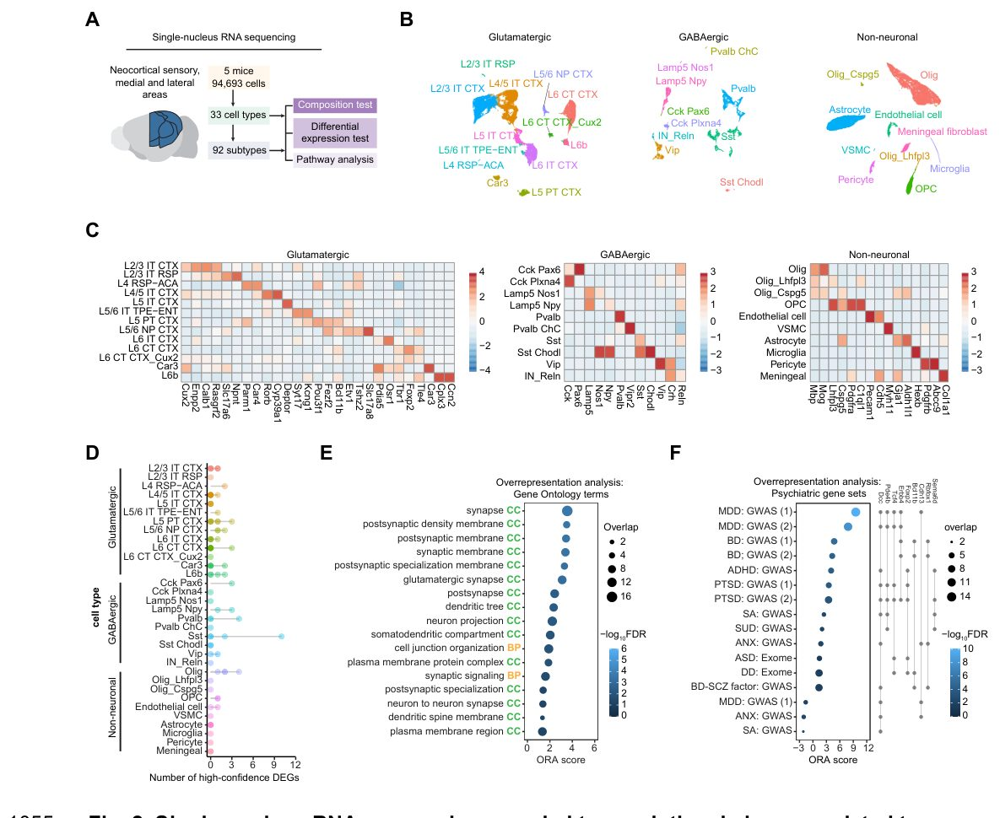
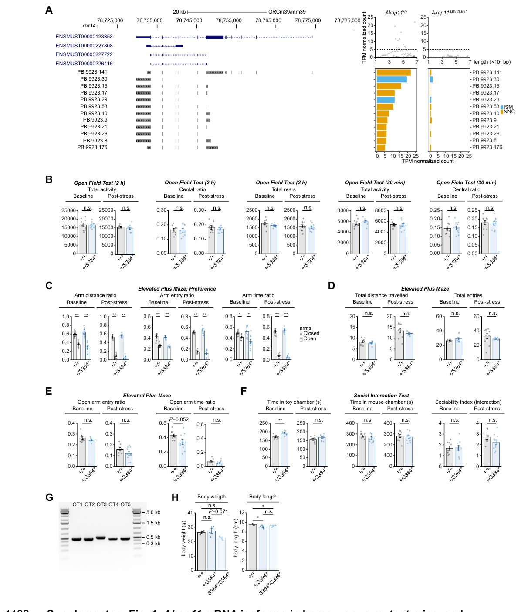
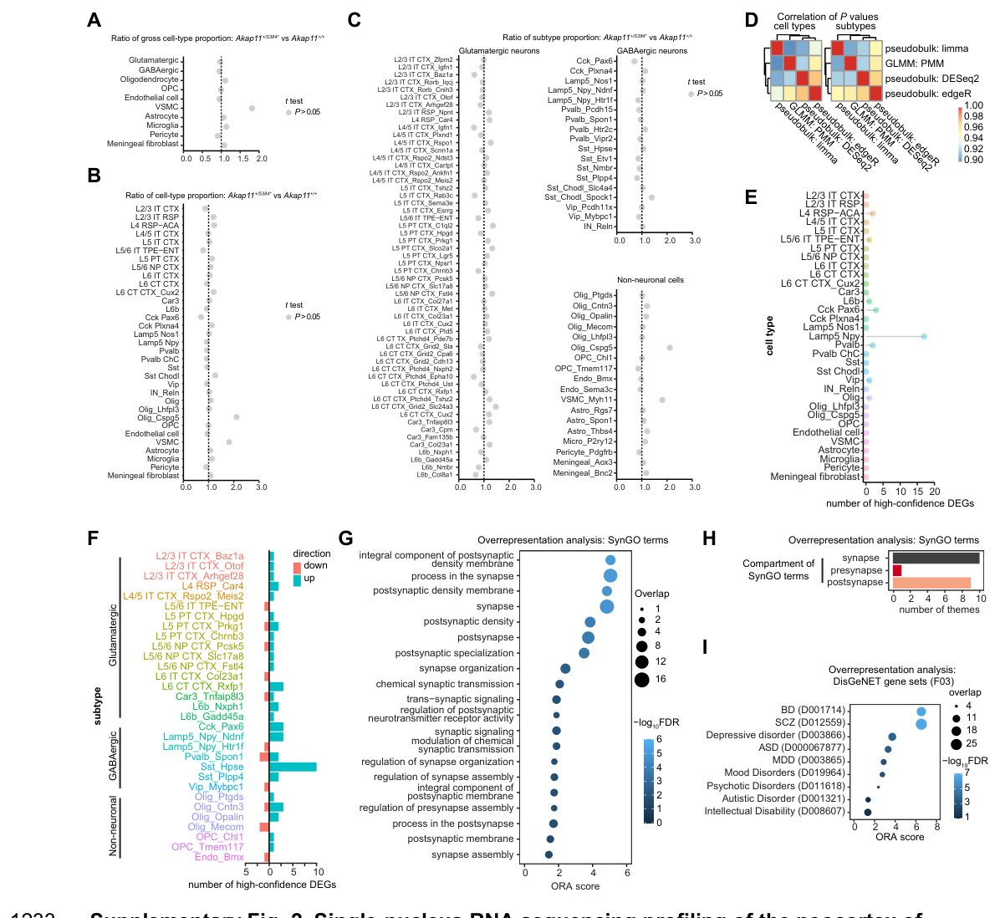
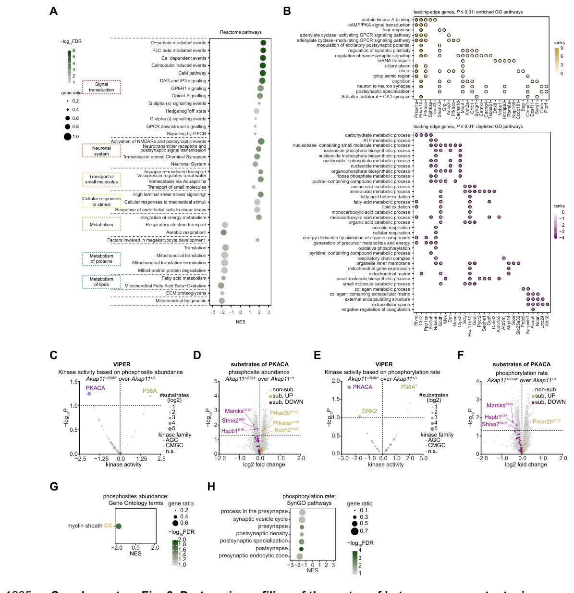

Как редкая мутация в гене AKAP11 запускает тревогу и депрессию
, обнаруженный у пациента, демонстрируют снижение уровня мРНК и белка Akap11, а также поведен](../../media/2026-09-25/a-bipolar-disorder-associated-ultra-rare-akap11-protein-trun-f1.jpg)
Полное описание рисунка
Рис. 1. Гетерозиготные мыши, несущие ультраредкий вариант с усечением белка Akap11, обнаруженный у пациента, демонстрируют снижение уровня мРНК и белка Akap11, а также поведенческие дефициты, связанные с фенотипами тревожности и депрессии. A. Схема ультраредкого варианта с усечением белка (PTV) в гене AKAP11, обнаруженного у пациента, и создание нок-ин модели мыши с помощью редактирования генома CRISPR-Cas9. B. Нормализованные уровни мРНК Akap11 относительно Gapdh у мышей Akap11+/+ и Akap11+/S384*. PP1, PP2 и PP3 обозначают последовательности, амплифицированные тремя парами праймеров. Красная полоса указывает положение однонуклеотидной мутации. †P = 0.057 по U-критерию Манна-Уитни. Полные результаты статистического анализа приведены в Дополнительной таблице 1A. C. Схема, показывающая области мозга, проанализированные методом иммуноблоттинга на предмет содержания белка Akap11. Проанализированные области отмечены синим цветом. D. Иммуноблоты Akap11 в четырех областях мозга (слева) и количественная оценка (справа). Содержание белка Akap11 было снижено в соматосенсорной коре (P = 0.015), префронтальной коре (P = 0.041), гиппокампе (P = 0.0022) и стриатуме (P = 0.0087). *P ≤ 0.05; **P ≤ 0.01 по U-критерию Манна-Уитни. Полные результаты статистического анализа приведены в Дополнительной таблице 1B. E. Хронология поведенческого тестирования на исходном уровне и после индукции стресса путем одиночного содержания в течение трех недель.
Генетические исследования пациентов с биполярным расстройством и шизофренией часто указывают на редкие мутации в гене AKAP11. Чтобы понять механизм их действия, исследователи перенесли аналогичный дефект в геном мышей с помощью CRISPR-Cas9. Оказалось, что даже одна поврежденная копия гена приводит к дефициту белка и вызывает у животных тревожное и депрессивное поведение. Работа раскрывает молекулярную цепочку от генетической поломки до изменений в работе синапсов.
Главное
- Мутация c.1151C>A в гене Akap11 вызывает гаплонедостаточность белка у мышей
- Гетерозиготные самцы демонстрируют поведение, похожее на тревогу и депрессию
- Нарушается фосфорилирование мишеней PKA и развитие дендритов в неокортексе
Подробнее
Генетическая архитектура тяжелых психических расстройств включает как распространенные полиморфизмы с малым эффектом, так и редкие варианты с высокой пенетрантностью. Ранее проведенные метаанализы полноэкзомного секвенирования выявили повышенную частоту ультраредких вариантов с потерей функции (protein-truncating variants, PTVs) в гене AKAP11 у людей с биполярным расстройством и шизофренией. Этот ген кодирует белок AKAP11, который связывает протеинкиназу A (PKA) с ее субстратами, координируя внутриклеточную сигнализацию.
Используя метод редактирования генома CRISPR-Cas9, исследователи внесли точечную мутацию c.1151C>A (p.Ser384*) в экзон 7 мышиного гена Akap11, что аналогично мутации у пациента с биполярным расстройством. У гетерозиготных мышей уровень мРНК и белка Akap11 снизился примерно вдвое, что привело к гаплонедостаточности. Самцы с такой мутацией продемонстрировали выраженные поведенческие отклонения в тестом «открытое поле» и «приподнятый крестообразный лабиринт», особенно после трех недель социальной изоляции.
Транскриптомный и протеомный анализ неокортекса выявил изменения в генах и белках, отвечающих за синаптическую организацию и морфогенез нейритов. У мутантных животных наблюдалось избирательное увеличение регуляторных субъединиц типа I протеинкиназы A на фоне снижения фосфорилирования ее мишеней. В живых нейронах исследователи зафиксировали ослабление стимул-зависимой активности PKA и нарушения раннего развития дендритов, что объясняет механизм возникновения симптомов на клеточном уровне.
Ограничения
Исследование выполнено на мышиной модели с одной конкретной мутацией, а поведенческие и молекулярные изменения изучались преимущественно у самцов.
Подробный разбор статьи
Резюме
Редкие генетические варианты, связанные с психическими заболеваниями, обычно обладают более выраженным индивидуальным эффектом и играют прямую биологическую роль, открывая перспективы для понимания причинно-следственных связей между генетикой и фенотипом болезни. Недавний метаанализ полноэкзомного секвенирования выявил повышенную частоту ультраредких вариантов, приводящих к усечению белка (PTV), в гене AKAP11 у пациентов с биполярным расстройством и шизофренией. Ген AKAP11 кодирует якорный белок протеинкиназы A (PKA), который связывает PKA с ее субстратами. До сих пор оставалось неясным, как именно такие варианты AKAP11 влияют на развитие психических патологий.
Пояснение
PTV (protein-truncating variant) — это мутация, которая приводит к преждевременному появлению стоп-кодона и образованию усеченного, часто нефункционального белка.
Для изучения этого вопроса исследователи с помощью геномного редактирования CRISPR-Cas9 внесли в локус Akap11 мышей ультраредкий PTV, обнаруженный у пациента с биполярным расстройством. В результате было зафиксировано снижение уровней мРНК и белка Akap11 без появления стабильных новых изоформ мРНК, что привело к гаплонедостаточности Akap11. Самцы гетерозиготных мышей продемонстрировали поведенческие отклонения, указывающие на фенотипы, подобные тревожному и депрессивному.
Важно
Введение человеческой мутации AKAP11 мышам привело к гаплонедостаточности гена и появлению у самцов тревожно- и депрессиподобного поведения.
Транскриптомный и протеомный анализ неокортекса выявил молекулярные сдвиги, затрагивающие синаптическую организацию, синаптическую сигнализацию и морфогенез нейритов. У гетерозиготных мутантных животных наблюдалось избирательное повышение уровня регуляторных субъединиц PKA I типа (но не II типа), а также каталитических субъединиц PKA в неокортексе. На функциональном уровне эти изменения сопровождались снижением фосфорилирования субстратов PKA, ослаблением стимул-зависимой активности PKA в корковых возбуждающих нейронах и нарушением начального развития дендритов в нейронах коры.
Осторожно
Работа выполнена на мышиной модели, что требует осторожности при экстраполяции выводов на сложные механизмы психических расстройств у людей.
Психиатрические заболевания обладают сложной генетической архитектурой, характеризующейся высокой полигенностью и плейотропией. Полногеномные исследования ассоциаций (GWAS) выявили множество распространенных вариантов (частота минорного аллеля, MAF > 1%), каждый из которых вносит лишь малый вклад в риск развития патологии. В последнее время секвенирование экзома и генома позволило обнаружить редкие (MAF < 1%) и ультраредкие (MAF < 0,1%) варианты, играющие значимую роль в развитии шизофрении, биполярного расстройства (БР), расстройств аутистического спектра и других нарушений развития. Хотя редкие варианты объясняют меньшую долю наследуемости на популяционном уровне, они обладают более выраженным индивидуальным эффектом и прямым биологическим воздействием, что делает их ключевыми для понимания причинно-следственных связей между генетикой и фенотипом болезни.
Важно
Ультраредкие варианты с потерей функции (PTV) в гене AKAP11 ассоциированы с БР и шизофренией, однако механизмы их влияния на молекулярные пути и поведение требуют уточнения через точные генетические модели.
БР и шизофрения затрагивают 35,7 млн (0,46%) и 26,9 млн (0,34%) человек соответственно. Мета-анализ экзомных данных выявил обогащение ультраредкими PTV-вариантами в локусе AKAP11 у пациентов с этими диагнозами. Ген AKAP11 кодирует белок-якорь протеинкиназы А (PKA), обеспечивающий взаимодействие PKA с субстратами. Предыдущие исследования на нокаутных (KO) моделях мышей, где удалялись целые экзоны (6 и/или 7), демонстрировали нарушения динамики PKA в стриатуме, изменения ЭЭГ и депрессивно-подобное поведение. Однако такие модели могут затрагивать цис-регуляторные элементы или структуру хроматина, что создает риск побочных эффектов, не связанных напрямую с функцией белка AKAP11.
Для создания более точной модели мы использовали систему CRISPR-Cas9, чтобы внести в экзон 7 мышиного гена Akap11 однонуклеотидную замену, гомологичную ультраредкому PTV-варианту (c.1148C>A, p.Ser383*), найденному у пациента с БР. Выбранный вариант (chr13:42299894C>A, частота аллеля 3,59 × 10⁻⁵) приводит к появлению преждевременного стоп-кодона. Учитывая, что патогенные варианты при психических расстройствах обычно встречаются в гетерозиготном состоянии, мы анализировали гетерозиготных мышей-самцов.
Пояснение
CRISPR-Cas9 — метод точного редактирования генома, позволяющий вносить специфические изменения в ДНК, в данном случае — имитировать конкретную мутацию человека у мыши.
Наши данные показали, что гетерозиготные мутантные мыши демонстрируют поведенческие дефициты, характерные для тревожно-депрессивных состояний. Анализ транскриптома, протеома и фосфопротеома неокортекса выявил изменения в организации синапсов, морфогенезе нейритов и регуляции PKA-сигналлинга. Эти результаты были подтверждены методами визуализации активности PKA в живых клетках и морфометрическим анализом нейронов.
Используя метод редактирования генома CRISPR-Cas9, исследователи внесли точечную нуклеотидную мутацию c.1151C>A (p.Ser384*) в седьмой экзон мышиного транскрипта Akap11 под номером ENSMUST00000123853 (Рис. 1A). Анализ методом электрофореза продуктов ПЦР (Рис. SN 1G) и последующее подтверждение с помощью Сэнгер-секвенирования показали отсутствие индели в пяти основных потенциально внецелевых сайтах у основателя мужского пола поколения F2. Гетерозиготные и гомозиготные мыши оказались жизнеспособными. Генотип оказал незначительное влияние на массу тела, причем наибольшая разница фиксировалась между гетерозиготными и гомозиготными особями (Рис. SN 1H). Длина тела от кончика носа до основания хвоста зависела от генотипа статистически значимо: и гетерозиготные, и гомозиготные мутанты уступали в длине контрольным животным (Рис. SN 1H).
Полное описание рисунка
Рис. 1. Гетерозиготные мыши, несущие ультраредкий вариант с усечением белка Akap11, обнаруженный у пациента, демонстрируют снижение уровня мРНК и белка Akap11, а также поведенческие дефициты, связанные с фенотипами тревожности и депрессии. A. Схема ультраредкого варианта с усечением белка (PTV) в гене AKAP11, обнаруженного у пациента, и создание нок-ин модели мыши с помощью редактирования генома CRISPR-Cas9. B. Нормализованные уровни мРНК Akap11 относительно Gapdh у мышей Akap11+/+ и Akap11+/S384*. PP1, PP2 и PP3 обозначают последовательности, амплифицированные тремя парами праймеров. Красная полоса указывает положение однонуклеотидной мутации. †P = 0.057 по U-критерию Манна-Уитни. Полные результаты статистического анализа приведены в Дополнительной таблице 1A. C. Схема, показывающая области мозга, проанализированные методом иммуноблоттинга на предмет содержания белка Akap11. Проанализированные области отмечены синим цветом. D. Иммуноблоты Akap11 в четырех областях мозга (слева) и количественная оценка (справа). Содержание белка Akap11 было снижено в соматосенсорной коре (P = 0.015), префронтальной коре (P = 0.041), гиппокампе (P = 0.0022) и стриатуме (P = 0.0087). *P ≤ 0.05; **P ≤ 0.01 по U-критерию Манна-Уитни. Полные результаты статистического анализа приведены в Дополнительной таблице 1B. E. Хронология поведенческого тестирования на исходном уровне и после индукции стресса путем одиночного содержания в течение трех недель.
Пояснение
Метод CRISPR-Cas9 позволяет точечно изменять нуклеотидную последовательность ДНК в заданном месте генома, создавая модели генетических заболеваний человека. RT-qPCR используется для точного количественного определения уровня экспрессии РНК.
Анализ методом RT-qPCR продемонстрировал падение уровня транскриптов Akap11 примерно на 50% в соматосенсорной коре мышей Akap11+/S384*, причем праймеры были подобраны к участкам как до, так и после позиции мутации (Рис. 1B). Полнотранскриптомное секвенирование РНК не выявило новых изоформов транскриптов Akap11 в соматосенсорной коре гомозиготных мутантных мышей (Akap11S384*/S384*) по сравнению с контролем Akap11+/+ (Рис. SN 1A). Кроме того, экспрессия белка Akap11 существенно снижалась в соматосенсорной коре, гиппокампе, префронтальной коре и стриатуме у мышей Akap11+/S384* (Рис. 1C-D).
Важно
У гетерозиготных мышей Akap11 уровень мРНК снижается на 50%, а также падает экспрессия белка в ключевых структурах мозга при сохранении жизнеспособности.
Далее ученые изучили поведенческие особенности мышей с мутацией в гене Akap11. Поскольку взаимодействие генотипа со средой критически важно для развития нервно-психических расстройств, поведенческий фенотип самцов Akap11+/S384* и Akap11+/+ оценивали в исходном состоянии и после трех недель одиночного содержания (Рис. 1E), что служит моделью мягкого хронического стресса у грызунов. В тесте «открытое поле» мыши Akap11+/S384* демонстрировали меньшее количество вертикальных стойках в течение первых 30 минут на исходном этапе, в то время как общая двигательная активность и отношение времени в центре не менялись (Рис. SN 1B). После трех недель изоляции разница в стойках исчезала, вероятно, из-за общего снижения активности контрольных мышей Akap11+/+ (Рис. 1F). При тестировании в течение двух часов в «открытом поле» различий по общей активности, центральному соотношению и стойкам между генотипами не отмечалось (Рис. SN 1B).
В тесте на приподнятом крестообразном лабиринте мыши Akap11+/S384* проявляли тенденцию к сокращению времени пребывания в открытых рукавах на исходном уровне (P = 0.052; Рис. SN 1E) и демонстрировали статистически значимо меньшую долю пройденного расстояния в открытых рукавах после периода изоляции (Рис. 1G). Обе группы мышей (Akap11+/+ и Akap11+/S384*) предпочитали закрытые рукава открытым (Рис. SN 1C), причем общая длина пройденного пути и количество заходов в зоны оставались одинаковыми для всех генотипов (Рис. SN 1D).
Осторожно
Оценка поведения проводилась только на самцах мышей, а часть выявленных отклонений находилась на уровне тенденции к статистической значимости.
В тесте трехкамерного социального взаимодействия мыши Akap11+/S384* показывали пограничное снижение индекса общительности, основанного на камерах, в исходных условиях (P = 0.054; Рис. 1H), однако после трехнедельной изоляции это различие нивелировалось (Рис. 1H). В исходном состоянии мутантные особи Akap11+/S384* проводили больше времени в камере с игрушкой по сравнению с контролем Akap11+/+, но после изоляции этот эффект пропадал; при этом время нахождения в камере с другой мышью и индекс взаимодействия оставались неизменными (Рис. SN 1F). Суммарно гетерозиготные мутанты по гену Akap11 обладают поведенческими дефицитами, которые могут быть связаны с фенотипами тревожности и депрессии: часть нарушений проявляется изначально, а другие усугубляются под влиянием мягкого хронического стресса.
Чтобы выявить молекулярные механизмы, связанные с патогенным вариантом Akap11 PTV, авторы провели секвенирование РНК единичных ядер (snRNA-seq) сенсорной, медиальной и латеральной областей неокортекса. В эксперименте использовались две 12-недельные мыши линии Akap11+/S384* и три мыши контрольной группы Akap11+/+ из того же помета (Рис. 2A).


Полное описание рисунка
Рис. 2. Одноядерное секвенирование РНК выявило транскрипционные изменения, связанные с синаптической организацией, синаптической сигнализацией и проекциями нейронов в коре гетерозиготных мутантных мышей. A. Схема рабочего процесса одноядерного секвенирования РНК (snRNA-seq). Всего было идентифицировано 33 типа клеток и 92 подтипа. B. Графики UMAP для клеток, аннотированных в 33 типа клеток, сгруппированных в глутаматергические, ГАМКергические и неирональные категории. C. Тепловые карты, показывающие среднюю нормализованную экспрессию маркеров типов клеток, преобразовыванную по логарифму с основанием 2, для 33 типов клеток. D. График леденцов (lollipop plot), показывающий количество высокоуверенных дифференциально экспрессируемых генов (DEG), обнаруженных в каждом из 92 подтипов, сгруппированных по типам клеток. Высокоуверенные DEG определялись как гены с частотой ложных открытий (FDR) ≤ 0.10 при псевдообъемном анализе дифференциальной экспрессии с использованием квазиправдоподобной отрицательной биномиальной обобщенной лог-линейной модели edgeR и номинальным P ≤ 0.05 в одноклеточной смешанной модели Пуассона-гамма (PMM), с конкордантным направлением изменений между методами. E. Термины генной онтологии (GO), избыточно представленные среди upregulated высокоуверенных DEG. Значимая избыточная представленность определялась как FDR ≤ 0.05 по гипергеометрическому тесту. Оценка анализа избыточной представленности (ORA) рассчитывалась как −log10FDR, умноженное на направление изменения, причем положительные значения указывают на обогащение среди генов, экспрессия которых повышена у мышей Akap11+/S384*, а отрицательные значения указывают на обогащение среди генов с пониженной экспрессией. BP, биологический процесс; CC, клеточный компонент. F. Наборы генов риска психических расстройств, избыточно представленные среди расширенных высокоуверенных DEG. Значимая избыточная представленность определяется как FDR ≤ 0.05 по гипергеометрическому тесту. Оценка ORA определяется как −log10FDR, умноженное на направление изменения. Матричная сетка справа указывает на перекрывающиеся гены между каждым набором генов риска и расширенным списком высокоуверенных DEG. Показаны только гены, присутствующие по меньшей мере в четырех избыточно представленных наборах генов. Аббревиатуры: ADHD = синдром дефицита внимания и гиперактивности, ANX = тревожное расстройство, ASD = расстройство аутистического спектра, BD = биполярное расстройство, DD = расстройство развития, MDD = большое депрессивное расстройство, PTSD = посттравматическое стрессовое расстройство, SA = попытка суицида, SCZ = шизофрения и SUD = расстройства, связанные с употреблением психоактивных веществ.
Пояснение
Секвенирование РНК единичных ядер (snRNA-seq) — это метод анализа экспрессии генов на уровне отдельных клеток (точнее, их ядер), позволяющий детально изучать сложные ткани, такие как головной мозг, и различать множество типов клеток.
Кластеризация 94 693 клеток и 21 857 генов позволила выделить 33 кластера, соответствующих глутаматергическим клеткам конкретных слоев, основным гамкергическим типам клеток и не нейрональным клеткам (Рис. 2B-C; Таблица SN). Учитывая высокую транскрипционную, морфологическую и физиологическую гетерогенность клеток мозга у мышей и людей, исследователи дополнительно разделили эти 33 кластера на 92 подтипа (Таблица SN) и оценили изменения транскрипции на разных уровнях разрешения. При этом существенных различий в клеточном составе между генотипами при поправке на ложнообнаружения FDR ≤ 0.05 обнаружено не было (Рис. SN; Таблица SN).
Важно
Анализ 94 693 клеток и 92 подтипов не выявил изменений в клеточном составе коры мозга мутантных мышей, однако позволил найти специфические дифференциально экспрессируемые гены (DEGs).
Достоверные дифференциально экспрессируемые гены (DEGs) определялись с помощью псевдообъемного теста (pseudobulk) при FDR ≤ 0.10 и фильтровались по номинальному значению P ≤ 0.05 в обобщенной линейной смешанной модели (GLMM) с согласованным направлением изменений (Рис. SN; Методы). Используя такие критерии, авторы выявили 28 DEGs среди 33 клеточных типов (Рис. SN; Таблица SN) и 61 DEG среди 92 подтипов (Рис. 2D; Рис. SN; Таблица SN).
Осторожно
Результаты получены на гетерозиготных мышах линии Akap11+/S384* и отражают генетическую модель, которая может не полностью воспроизводить все аспекты человеческих патологий.
Среди 92 подтипов наибольшее количество DEGs содержал подтип интернейронов, экспрессирующих соматостатин (SST); все эти гены были upregulated (увеличены в экспрессии) у мышей Akap11+/S384* (Рис. 2D; Рис. SN). Данный подтип отличался повышенной экспрессией Hpse по сравнению с другими кластерами SST, что указывает на возможное соответствие не-Мартиннотиевским SST-интернейронам в слоях коры 4 (L4) и L5a.
Для понимания биологических процессов провели анализ обогащения с использованием терминов Gene Ontology (GO) и путей SynGO для высокой степени достоверности DEGs среди 92 подтипов (Рис. 2E; Рис. SN; Таблица SN). Увеличенные в экспрессии DEGs существенно обогащали GO-пути, связанные с синапсами: «синапс», «мембрана постсинаптической плотности» и «синаптическая передача сигналов» при FDR ≤ 0.05 (Рис. 2E). Согласуясь с этим, они также обогащали подмножество путей SynGO, в основном связанных с постсинаптическим компартментом или общими категориями синапсов (Рис. SN). Кроме того, upregulated DEGs обогащали GO-термины, связанные с морфогенезом нейритов: «дендритно-древовидное строение», «проекция нейрона», «соматодендритический компартмент» и «мембрана дендритных шипиков» (Рис. 2E). Уменьшенные в экспрессии (downregulated) DEGs значимого обогащения по терминам GO или SynGO не показали.
Важно
Увеличенные в экспрессии гены у мутантных мышей связаны с синаптической передачей, структурой постсинаптической плотности и дендритов, а также пересекаются с генетическими факторами риска психических расстройств.
Затем исследователи оценили, связаны ли транскрипционные изменения у мышей Akap11+/S384* с генами риска нейропсихиатрических расстройств по данным полногеномных ассоциативных исследований (GWAS) или секвенирования экзома (WES) (Таблица SN). Использовался расширенный набор DEGs, определенный по номинальной значимости в pseudobulk-тесте (P ≤ 5 × 10⁻⁴) и GLMM-тесте (P ≤ 0.05) с согласованным направлением изменений. Этот расширенный набор показал обогащение генами риска, связанными с расстройствами настроения и психотическими расстройствами, включая большое депрессивное расстройство, биполярное расстройство и шизофрению (Рис. 2F; Таблица SN). Некоторые DEGs были вовлечены в несколько психических расстройств, например, ген Dcc, кодирующий рецептор Netrin-1, который регулирует наведение аксонов и оказывает перекрестное влияние на биполярное расстройство и шизофрению (Рис. 2F). Расширенный набор DEGs также обогащал курируемые наборы генов DisGeNET, связанные с расстройствами настроения, психотическими и нарушениями развития (Рис. SN; Таблица SN).
Дальнейший анализ выявил как общие, так и специфичные для конкретных клеточных типов изменения экспрессии генов. В частности, ген Spon1 оказался снижен в подтипе парвальбумин-экспрессирующих (PV) интернейронов (Рис. 3А). Spon1 кодирует внеклеточный матриксный адгезивный молекулярный белок F-спондин, управляющий ростом отростков и миграцией клеток. Зафиксированы нарушения регуляции четырех генов молекул клеточной адгезии (Alcam, Cdh12, Nxph1 и Cdh13) в четырех подтипах проекционных нейронов глубоких слоев, которые иннервируют различные кортикальные и субкортикальные мишени (Рис. 3А). Данные гены играют ключевую роль в росте нейритов и формировании синапсов, указывая на возможные дефекты проекций и связности нейронов в коре мутантных животных.

Полное описание рисунка
Рис. 3. snRNA-seq выявила общие и специфичные для типов клеток транскрипционные изменения в коре гетерозиготных мутантных мышей. A. Скрипичные диаграммы (violin plots), показывающие нормализованную экспрессию выбранных дифференциально экспрессируемых генов (DEG), преобразованную по логарифму с основанием 2, между мышами Akap11+/+ и Akap11+/S384*. +/+, Akap11+/+; +/S384*, Akap11+/S384*. B. Тепловая карта, показывающая средний нормализованный показатель обогащения (NES) для категорий терминов GO в подтипах, содержащих по меньшей мере 5000 генов, удовлетворяющих минимальным критериям экспрессии. Положительные и отрицательные значения NES указывают на обогащение и истощение у мышей Akap11+/S384* соответственно. Значимость определялась как FDR ≤ 0.05 с помощью перестановочного теста. C. Тепловые карты, показывающие ранги лидирующих генов (leading-edge genes) для выбранных категорий GO. Ранги генов рассчитывались как −log10P x sign(log2 fold change) по результатам теста псевдообъемной дифференциальной экспрессии. Положительные и отрицательные ранги указывают на повышение и понижение экспрессии соответственно у мышей Akap11+/S384*. Звездочки обозначают лидирующие гены для соответствующего подтипа и категории пути. Показаны только гены с P ≤ 0.05 в тесте псевдообъемной дифференциальной экспрессии по меньшей мере в одном релевантном подтипе.
Дополнительно отмечалось повышение уровня Sgk1 в двух подтипах зрелых олигодендроцитов (Рис. 3А; Таблица SN), а также на уровне всего клеточного типа олигодендроцитов (Таблица SN). Ген Sgk1 кодирует сывороточную и глюкокортикоид-регулируемую киназу 1, причем воздействие стресса повышает экспрессию Sgk1 в олигодендроцитах и меняет их морфологию у мышей.
Пояснение
> GSEA — метод статистического анализа набора генов, позволяющий определить, обогащены ли определенные биологические пути или функциональные группы генов в исследуемом массиве данных.
Для детализации биологических путей, затронутых мутацией Akap11 PTV, авторы провели анализ обогащения наборов генов (GSEA) для каждого подтипа. Гены ранжировались по значению -\log10P imes extsign(\log2 extfold change). Для надежности перестановочного теста GSEA выполнялся исключительно для кластеров, содержащих не менее 5000 генов, прошедших фильтрацию по уровню экспрессии. Было обнаружено общее и специфичное для разных клеточных типов обогащение или истощение 124 путей GO по всем подтипам, которые были сгруппированы в 40 категорий на основе семантического сходства (Рис. 3В; Таблица SN; Методы).
Важно
> snRNA-seq выявила у мутантных мышей Akap11⁺/S384* нарушения синаптической организации, клеточной адгезии и нейронных проекций на уровне отдельных генов и целых путей (124 GO-пути в 40 категориях).
Термины GO, связанные с клеточной адгезией, были обогащены у мышей Akap11⁺/S384* в одном подтипе интракортикальных нейронов L4/5 IT, двух подтипах кортикоталамических нейронов L6 CT и одном подтипе L6b (Рис. 3В). Драйверами этого обогащения выступали классический кадгерин Cdh12, а также атипичные кадгерины Cdh7, Cdh9, Cdh13 и Cdh20 (Рис. 3С). Также зафиксировано обогащение терминов GO, связанных с ГАМК-ергической сигнализацией, в подтипах нейронов L4/5 IT, L6 CT и SST, а путей, связанных с активностью трансмембранных рецепторных протеинкиназ — в подтипах L5 пирамидного тракта (PT), Lamp5 и SST (Рис. 3B-C).
GSEA с использованием синапс-специфичных путей SynGO продемонстрировал, что мутация преимущественно сопряжена с усилением экспрессии синаптических наборов генов (Рис. 3D; Таблица SN). Отдельные синаптические термины также обогатились в не нейрональных клетках — подтипах олигодендроцитов и астроцитов (Рис. 3B, D), что может объясняться неспецифичной аннотацией некоторых терминов GO, как отмечалось в предыдущих транскриптомных исследованиях [42]. Подводя итог, профилирование snRNA-seq неокортекса мышей Akap11⁺/S384* обнаружило транскрипционные сдвиги в синаптической организации, передаче сигналов, клеточной адгезии и нейронных проекциях на уровне как отдельных генов, так и целых сигнальных путей.
Осторожно
> Все выводы получены на модели гетерозиготных мышей с конкретной мутацией Akap11, что требует осторожности при экстраполяции на человека.
Для анализа общего протеома и фосфопротеома неокортекса мы использовали метод тандемной масс-спектрометрии с метками TMT. Исследование проводилось на 12-недельных самцах мышей: 5 особей с генотипом Akap11+/S384* и 4 особи дикого типа Akap11+/+ (Рис. 4A). Всего было идентифицировано 8742 белковые изоформы. При строгом пороге значимости (P ≤ 5 × 10⁻⁴) и фильтрации по размеру эффекта (абсолютное значение \log2 изменения экспрессии ≥ 0,10) выявлено 12 дифференциально представленных белков (DAP; Рис. 4B; Таблица SN 5A).

Пояснение
TMT-масс-спектрометрия — метод количественного анализа белков, при котором образцы метятся специальными химическими «штрих-кодами», позволяющими точно сравнить концентрации тысяч белков между разными группами мышей.
У мышей Akap11+/S384* наблюдалось повышение уровня 9 белков, включая регуляторные субъединицы PKA типа I (RIα и RIβ, кодируемые Prkar1a и Prkar1b) и каталитические субъединицы PKA (Cα и Cβ, кодируемые Prkaca и Prkacb) (Рис. 4B). Иммуноблоттинг подтвердил эти данные: уровни RIα и RIβ выросли на 69,8% и 36,3% соответственно, а Cα и Cβ — на 14,5% и 24,3% (r ≥ 0,79; Рис. 4D). При этом регуляторные субъединицы PKA типа II (RIIα и RIIβ) остались неизменными (Рис. 4D). Также отмечено повышение уровней Ctnnd1, Sphkap, Slc24a3, Mapt и Dhx9, тогда как уровни Znf787, Dstyk и Lrp11 снизились (Рис. 4B).
Важно
Мутация Akap11 приводит к избирательному накоплению субъединиц PKA I типа и каталитических субъединиц PKA в коре головного мозга, что указывает на нарушение сигнального пути PKA.
При менее строгом пороге (P ≤ 0,01) было выявлено 117 DAP (62 повышенных и 55 пониженных). Анализ обогащения генных онтологий (GSEA) показал 56 значимых категорий, сгруппированных в 23 кластера (Рис. 4C). Обогащение терминов «связывание протеинкиназы А», «передача сигнала cAMP/PKA» и «GPCR-сигнализация» указывает на дисфункцию PKA-сигнализации (Рис. 4C; Таблица SN 5C, D). Кроме того, выявлены изменения в путях «регуляция транс-синаптической передачи» и «организация синапсов» (Рис. 4C, E), что согласуется с данными транскриптомики. В то же время наблюдалось истощение путей, связанных с миелиновой оболочкой, метаболизмом биомолекул и митохондриальными процессами (Рис. 4C; Рис. SN 3A-B).
Осторожно
Исследование проведено на модели мышей, поэтому выявленные изменения в протеоме коры могут не полностью отражать патофизиологию психических расстройств у человека.
Мутация PTV в гене AKAP11, обнаруженная у пациентов, избирательно повышала уровень белка регуляторных субъединиц протеинкиназы A (PKA) типа I RIα/β и каталитических субъединиц Cα/β. Поскольку изменение содержания изоформ PKA может влиять на последующее фосфорилирование, зависимое от PKA, авторы изучили, как меняется общий фосфопротеомный профиль и киназная активность PKA в неокортексе мышей Akap11⁺/S384* (рис. 4F, табл. S6A). Из 10709 фосфосайтов, идентифицированных методом ЖХ-МС/МС в обогащенных фосфопептидами фракциях, у мутантных мышей достоверно различались 9 сайтов (7 увеличились, 2 уменьшились) при пороге P ≤ 5 × 10⁻⁴ и абсолютном значении \log2 кратности изменения ≥ 0.10. При менее строгом пороге (P ≤ 0.01 и \log2 кратности ≥ 0.10) было выявлено 325 дифференцированно представленных фосфосайтов, из которых 164 увеличились, а 161 уменьшился.
Важно
У мышей с мутацией Akap11 выявлено масштабное изменение фосфорилирования протеинов и значительное снижение активности киназы PKA наряду с нарушением синаптических и везикулярных путей.
Среди 12 белков с измененным уровнем общей протеомики (рис. 4B) наблюдалось увеличение фосфорилирования Prkar1a^S83 (P ≤ 5 × 10⁻⁴), а также Prkar1a^S77, Prkacb^S339 и Sphkap^S1171 (P ≤ 0.01), тогда как фосфорилирование Sphkap^S50 и Ctnnd1^S346 снизилось (P ≤ 0.01, рис. 4F). Известно, что фосфорилирование PKA RIα по консервативным сайтам S83 и S77 усиливает связывание RIα с Cα и подавляет активность PKA [51]. Исходя из этого, авторы предположили снижение активности PKA у мышей Akap11⁺/S384*. Для проверки этой гипотезы активность киназ оценивали по фосфорилированию субстратов с использованием баз данных PhosphoSitePlus [52] и Signor [53]. Z-тест [54] выявил значительное снижение киназной активности PKA (PKACA) у мутантных мышей по 66 пересекающимся субстратам (рис. 4H, рис. S3D, табл. S6B-C). Тенденция к снижению активности PKA подтвердилась при анализе по другой базе данных (PTMsigDB) [55] с помощью рангового метода обогащения и теста перестановок [56] (P = 0.057, рис. S3C, табл. S6D).
Пояснение
GSEA (анализ обогащения набора генов) — биоинформатический метод, который определяет, связаны ли заранее заданные группы генов или белков с биологическими процессами или патологиями в исследуемых данных.
Кроме того, снизилась активность трех киназ группы AGC (PKA/PKG/PKC), трех киназ группы CAMK (кальций/кальмодулин-зависимые киназы), двух из группы STE (STE7/STE11/STE20) и одной тирозинкиназы (TK, рис. 4H). Анализ GSEA показал, что путь миелиновой оболочки ассоциирован с белками, содержащими фосфосайты с пониженным уровнем (рис. S3G, табл. S6E). Для оценки скорости фосфорилирования уровни фосфосайтов нормализовали относительно общего пула белков. Из 9565 фосфосайтов скорость фосфорилирования изменилась всего для четырех сайтов при P ≤ 5 × 10⁻⁴ и \log2 кратности ≥ 0.10 (рис. 4G, табл. S6F) и для 263 сайтов при менее строгом пороге (P ≤ 0.01, \log2 кратности ≥ 0.10, рис. 4G). Скорость фосфорилирования AKAP-белка Sphkap снизилась по сайту S50, хотя общее количество белка Sphkap выросло (рис. 4B, 4G); у Ctnnd1 скорость фосфорилирования упала по пяти сайтам, а у Dstyk выросла по одному сайту (рис. 4G). Анализ киназ-субстратов подтвердил падение активности PKA (рис. 4I, рис. S3E-F, табл. S6G-I).
Осторожно
Все ключевые выводы получены на модели гетерозиготных мутантных мышей, что требует осторожности при прямой экстраполяции результатов на молекулярную патологию у человека.
GSEA выявил, что термины генной онтологии (GO), связанные со структурой и функцией синапсов («пресинапс», «постсинаптическая специализация», «глутаматергический синапс», «организация постсинаптической специализации»), были связаны с белками, чья скорость фосфорилирования снижена (рис. 4J, табл. S6J). Анализ путей SynGO также подтвердил обогащение синаптических путей среди таких фосфосайтов (рис. S3H, табл. S6K). Белки Ctnnd1 и Prune2 вносили основной вклад в синаптические пути (табл. S6K). Путь GO «дендритное дерево» также ассоциировался с белками с дефицитом фосфорилирования (рис. 4J). Таким образом, процессы, связанные с синапсами и проекциями нейронов, нарушаются на уровнях транскриптома, протеома и фосфопротеома неокортекса мышей Akap11⁺/S384*. Дополнительно у белков с пониженной скоростью фосфорилирования были обогащены пути, связанные с везикулами («мембрана везикулы», «окаймленная везикула» и «везикулярный транспорт в синапсе», рис. 4J).
Протеомный анализ показал избирательное повышение уровня I типа, но не II типа, регуляторных субъединиц протеинкиназы A (PKA), а также каталитических субъединиц PKA в неокортексе гетерозиготных мутантных мышей (Рис. 4). Эти сдвиги сопровождались снижением фосфорилирования предполагаемых субстратов PKA (Рис. 4), что указывает на вероятные нарушения в передаче сигналов PKA. Кортикальные нейроны, полученные из эмбрионов Akap11+/S384* на 16.5-й день эмбрионального развития (E16.5), продемонстрировали усиление иммунореактивности PKA RIα по сравнению с нейронами Akap11+/+ на 21–22 дни in vitro (DIV) (Рис. 5A-B). Для прямой оценки киназной активности PKA мы экспрессировали возбуждающе-ратиометрический сенсор PKA ExRai-AKAR2 под промотором Camk2a в культивируемых кортикальных нейронах эмбрионов E16.5 Akap11+/S384* и Akap11+/+ (Рис. 5C-D). Специфичность и двунаправленную чувствительность сенсора PKA в нейронах Akap11+/+ подтвердили путем добавления в ванночку стимулятора аденилатциклазы форсколина и ингибитора фосфодиэстеразы-4 ролипрама, а также мощного ингибитора PKA H-89 (Рис. SN 4A-B).

Полное описание рисунка
Рис. 5. Визуализация живых клеток выявляет ослабленную стимул-зависимую активность PKA в возбуждающих корковых нейронах гетерозиготных мутантных мышей. A. Представительные изображения корковых нейронов, трансфицированных pCAG-GFP на 4–6 дни in vitro (DIV) и иммуноокрашенных на PKA RIα на DIV21-22. Масштабные отрезки: 10 мкм. B. Количественная оценка иммунофлуоресценции PKA RIα в соме нейронов Akap11+/S384* и Akap11+/+. Нейроны Akap11+/S384* показали повышенную иммунофлуоресценцию PKA RIα по сравнению с нейронами Akap11+/+ (Akap11+/+: N = 5 эмбрионов, n = 26 нейронов; Akap11+/S384*: N = 6 эмбрионов, n = нейронов; P = 0.047). P ≤ 0.05 по U-критерию Манна-Уитни. Полные результаты статистического анализа приведены в Дополнительной таблице 7A. C. Экспериментальная хронология культивирования корковых нейронов, трансфекции сенсором PKA и визуализации живых клеток. D. Представительные сигналы сенсора PKA в нейроне Akap11+/+ (верхние панели) и нейроне Akap11+/S384 (нижние панели) на DIV22. Для каждого нейрона показаны сигнал F488 после стимуляции форсколином/ролипрамом (слева), отношение F488/F405 на исходном уровне (-FSK/Rol; посередине) и отношение F488/F405 после стимуляции (+FSK/Roli; справа). Изображения показаны с первой временной точки каждого условия. Масштабный отрезок: 10 мкм. FSK, форсколин. Roli, ролипрам. E. Количественная оценка активности PKA. Коробочные диаграммы (boxplots) показывают среднее отношение F488/F405 на исходном уровне (слева) и среднее нормализованное изменение отношения F488/F405 (среднее ΔR/R0) в ответ на стимуляцию форсколином/ролипрамом (справа), где R = F488/F405, R0 — отношение в первой базовой временной точке, а ΔR — изменение R относительно R0. Базовая активность PKA продемонстрировала тенденцию к снижению в нейронах Akap11+/S384* по сравнению с нейронами Akap11+/+ (P = 0.075), в то время как вызванная стимулом активность PKA была значительно снижена в нейронах Akap11+/S384* (Akap11+/+: N = 2 эмбриона, n = нейронов; Akap11+/S384*: N = 3 эмбриона, n = 15 нейронов; P = 0.0074). **P ≤ 0.01 по U-критерию Манна-Уитни. На коробочных диаграммах нижняя граница, средняя линия и верхняя граница представляют первый квартиль, медиану и третий квартиль соответственно. Усы представляют 1.5 × межквартильный размах от границ коробки. Линейные графики показывают временной ход ΔR/R0 для нейронов Akap11+/+ (слева) и Akap11+/S384* (справа). Верхняя, средняя и нижняя жирные сплошные линии обозначают максимальное, среднее и минимальное значения ΔR/R0 соответственно. Тонкие сплошные линии показывают траектории отдельных нейронов. Штриховые линии обозначают 3-минутный интервал во время введения препарата, когда визуализация была приостановлена. Горизонтальные пунктирные линии обозначают ΔR/R0 = 0. Полные результаты статистического анализа приведены в Дополнительной таблице 7C.
Пояснение
Ратиометрический сенсор ExRai-AKAR2 — это генетически кодируемый инструмент, который позволяет в реальном времени измерять активность фермента PKA по изменению соотношения интенсивности флуоресценции двух волн.
В кортикальных возбуждающих нейронах на DIV22 наблюдалось небольшое снижение базальной активности PKA, определяемой по соотношению возбуждения F₄₈₈/F₄₀₅, у нейронов Akap11+/S384* по сравнению с Akap11+/+ (P = 0.075; Рис. 5E). Вызванную стимулом активность PKA оценивали как Δ R / R₀, где R = F₄₈₈/F₄₀₅, R₀ — соотношение в первой исходной временной точке, а Δ R — изменение R относительно R₀. Стимуляция форсколином (25 мкм) и ролипрамом (2 мкм) в течение 3 минут повышала активность PKA в нейронах Akap11+/+ , тогда как у нейронов Akap11+/S384* этот ответ был ослаблен. В частности, смесь форсколина и ролипрама увеличивала средний показатель Δ R / R₀ примерно в 2.30 раза в нейронах Akap11+/+ , но лишь в 0.80 раза в нейронах Akap11+/S384* (Рис. 5E). Таким образом, в полном соответствии с уменьшением фосфорилирования, зависимого от PKA, по данным фосфопротеомного анализа, стимулируемая активность PKA была функционально нарушена в кортикальных возбуждающих нейронах мышей Akap11+/S384*.
Важно
Мутация в гене Akap11 приводит к функциональному дефициту PKA: стимулированный ответ фермента на форсколин и ролипрам падает более чем втрое по сравнению с нормой (0.80 против 2.30 раза).
Дисрегуляция молекул и биологических путей, связанных с ростом отростков нейронов и морфогенезом нейритов, оказалась повторяющейся особенностью транскриптома, протеома и фосфопротеома коры головного мозга мышей Akap11+/S384* , у которых мы также зафиксировали ослабление зависящей от активности сигнализации PKA (Рис. 2–5). PKA играет важную роль в наведении конусов роста и удлинении дендритов [58, 59]. Исходя из этого, мы предположили, что выявленная у пациентов усекающая мутация (PTV) в гене Akap11 нарушает развитие нейритов в кортикальных нейронах. Чтобы проверить гипотезу, мы культивировали кортикальные нейроны из эмбрионов E16.5 Akap11+/+ и Akap11+/S384* при низкой плотности и проанализировали морфологию нейритов на DIV6. Зарождающиеся аксоны определяли как отростки, позитивные по Tau-1 и MAP2, а дендриты — как негативные по Tau-1 и позитивные по MAP2.
Площадь сомы, количество дендритных деревьев и длина первичного аксона не различались между генотипами (Рис. 6A-B). Напротив, нейроны Akap11+/S384* показали значительное уменьшение средней длины дендритов (нейроны Akap11+/+ : 55.68 мкм, нейроны Akap11+/S384* : 40.05 мкм; Рис. 6A-B), что указывает на способность мутации PTV в гене Akap11 ухудшать ранний рост дендритов в развивающихся кортикальных нейронах.

Полное описание рисунка
Рис. 6. Полученная от пациента мутация Akap11 PTV нарушает морфогенез формирующихся дендритов. A. Трассировка репрезентативных кортикальных нейронов DIV6 в культурах Akap11+/+ и Akap11+/S384*. Масштабная линейка: 50 мкм. B. Количественный анализ морфологии нейронов на DIV6. У нейронов Akap11+/S384* не обнаружено значимых различий в площади сомы (P = 0,38), количестве дендритных деревьев (P = 0,11) и длине первичного аксона (P = 1,00), однако наблюдалось значительное уменьшение средней длины дендритов (P = 0,018). Akap11+/+: N = 2 эмбриона, n = 12 нейронов; Akap11+/S384*: N = 2 эмбриона, n = 9 нейронов. *P ≤ 0,05, n.s., P > 0,05 по U-критерию Манна — Уитни. Полные результаты статистического анализа приведены в Дополнительной таблице 8A.
Осторожно
Данные получены на культивируемых эмбриональных нейронах мышей (E16.5) с конкретной мутацией человека, что требует осторожности при экстраполяции на целостный мозг человека.
Важно
У мутантных мышей Akap11+/S384* средняя длина дендритов сокращается с 55.68 мкм до 40.05 мкм при сохранении общей длины аксонов и площади сомы.
Недавние исследования экзомома выявили сверхредкие протеин-усекающие варианты (PTV), ассоциированные с биполярным расстройством и шизофренией [10, 11], однако механизмы их вклада в патогенез остаются неясными. В данной работе авторы сосредоточились на сверхредком варианте PTV в гене AKAP11, обнаруженном у пациента с биполярным расстройством, и создали мышиную модель с гомологичной мутацией. У гетерозиготных мутантных мышей этот вариант снижал уровень мРНК Akap11 примерно на 50% и уменьшал количество белка Akap11. У гомозиготных мутантных мышей вариант не приводил к образованию детектируемых стабильных новых изоформ мРНК Akap11. Настоящее исследование расширяет результаты предыдущих моделей нокаута (KO) Akap11 несколькими важными способами. Во-первых, смоделировав клинически наблюдаемый однонуклеотидный PTV, авторы показали, что одной копии варианта достаточно для возникновения поведенческих аномалий и дисрегуляции протеинкиназы A (PKA), согласующихся с предыдущими моделями потери функции Akap11 путем делеции экзонов. Во-вторых, протеомный и транскриптомный анализы выявили сходные изменения в путях, связанных с синапсами и проекциями нейронов. В-третьих, функциональные анализы продемонстрировали ослабленный зависимый от стимуляции сигнальный путь PKA и нарушение морфогенеза в корковых нейронах, подчеркивая потенциальные механистические пути, имеющие терапевтическое значение.
У гетерозиготных мутантных мышей наблюдались дефициты вертикальной активности (рейринга) в тесте «открытое поле» и ухудшение социальной активности на исходном уровне. Изолированное содержание в течение трех недель дополнительно вызывало снижение активности в открытых рукавах приподнятого крестообразного лабиринта (Рис. 1). Аномалии в этих показателях связаны с фенотипами тревожности и депрессии у грызунов [60–63]. Полученные результаты совпали с более ранними данными для гетерозиготных моделей KO Akap11 с делецией экзонов, которые демонстрировали снижение рейринга в открытом поле, уменьшение предпочтения сахарозы, увеличение времени неподвижности в тесте подвешивания за хвост, снижение активности в открытых рукавах крестообразного лабиринта и уменьшение числа заходов в светлую камеру [20, 21]. Однако ни созданная модель, ни предыдущие KO-модели (гомозиготные или гетерозиготные) не проявляли четких маниакаподобных поведенческих реакций, таких как гиперактивность и снижение тревожности [64, 65]. Таким образом, потеря функции Akap11 может быть достаточной для появления поведенческих аномалий, связанных с тревожностью и депрессией, но недостаточной для воспроизведения всего поведенческого спектра биполярного расстройства [66, 67], для которого, вероятно, необходимы дополнительные полигенные и средовые факторы.
Существуют расхождения в отношении изменений экспрессии белков Akap11 и субъединиц PKA между текущими результатами и более ранним исследованием на гетерозиготных KO-моделях. Авторы зафиксировали снижение экспрессии белка Akap11 в четырех корковых и субкортикальных областях (Рис. 1D) в возрасте 12 недель. Напротив, Song и соавторы [20], используя мышей с делецией экзонов 6–7 Akap11, показали уменьшение Akap11 в лизатах коры у гомозиготных KO, но менее согласованные изменения на иммуноблотах у гетерозиготных KO. Аналогичным образом наблюдалось избирательное повышение регуляторных субъединиц PKA типа I RIα и RIβ, а также каталитических субъединиц Cα и C\bta. Эти данные согласуются с изменениями субъединиц PKA у гомозиготных KO в работе Song и соавторов [20], но отличаются от их результатов для гетерозиготных KO, у которых повышение RIα и Cα не определялось столь надежно. Возможными техническими объяснениями являются использование других статистических тестов и применение β-актина в качестве контроля загрузки в работе Song и соавторов [20]. Поскольку было показано, что AKAP11 и PKA взаимодействуют с актиновым цитоскелетом и регулируют его [68], нормирование по β-актину потенциально может маскировать изменения в количестве Akap11 и субъединиц PKA.
Важно
Гетерозиготная мутация PTV в Akap11 снижает уровень белка на 50%, вызывает тревожно-депрессивное поведение, нарушает синаптические транскриптомные пути и ослабляет зависимую от стимуляции сигнализацию PKA.
С другой стороны, развивая протеомные находки в синаптических фракциях в исследовании Song и соавторов [20], которые показали увеличение регуляторных субъединиц PKA типа I и каталитических субъединиц у гетерозиготных KO, новые данные дополнительно продемонстрировали повышение этих субъединиц в тотальных лизатах коры головного мозга гетерозиготных мутантных мышей, несущих PTV в гене Akap11, полученный от человека. Таким образом, было доказано, что человеческий PTV-вариант в гене Akap11 в гетерозиготном состоянии достаточен для снижения количества белка Akap11 и изменения экспрессии специфических субъединиц PKA.
Используя анализы фосфорилирования субстратов PKA in vitro, предыдущие исследования моделей KO Akap11 стабильно сообщали об увеличении базальной активности PKA в синаптической фракции у гомозиготных KO, тогда как изменения в цитозольной фракции или тотальном лизате, особенно у гетерозиготных KO, оставались менее однозначными [19, 20]. Более того, эти анализы в основном измеряли конститутивную активность PKA, оставляя динамику PKA, зависящую от стимуляции в клеточном контексте, в значительной степени неизвестной. В данном исследовании с помощью флуоресцентной таймлапс-микроскопии датчика PKA в соме культивируемых возбуждающих нейронов коры головного мозга авторы продемонстрировали тенденцию к снижению базальной активности PKA и ослабление активации PKA при стимуляции форсколином/ролипрамом у гетерозиготных мутантных нейронов.
Зависимая от стимуляции сигнализация PKA регулирует нейрональную пластичность путем модуляции фосфорилирования, транспорта и активации синаптических белков, включая глутаматные рецепторы, а также высвобождения нейромедиаторов и экспрессии генов, зависящих от белка, связывающего cAMP-чувствительный элемент (CREB) [69, 70]. Таким образом, нарушение зависимой от стимуляции сигнализации PKA может подрывать синаптическую пластичность, влияя на долговременную потенцирование (LTP), обучение и память. Соглашаясь с этой гипотезой, нарушение корковой пластичности по типу LTP связывают с шизофренией и расстройствами настроения [71, 72]. Авторы также отмечают, что в работе Song и соавторов [20] регистрация активности датчика PKA in vivo на основе FLIM в стриатуме гомозиготных KO показала повышенную базальную активность PKA и усиленный ответ на антагонисты D1- или D2-рецепторов. Никаких изменений базальной или вызванной активности PKA у гетерозиготных KO не наблюдалось [20]. Расхождение между полученными данными может быть связано с динамикой PKA, специфичной для типов клеток в стриатуме и коре головного мозга [73, 74]. Более того, системное введение антагонистов D1/D2 рецепторов может вовлекать разнообразные клеточные типы и цепи из-за широкого распределения рецепторов D1/D2 по областям мозга [75].
Пояснение
Датчик PKA — это генетически кодируемый молекулярный инструмент с флуоресцентной меткой, который позволяет в реальном времени отслеживать уровень активности фермента протеинкиназы A внутри живых клеток под воздействием стимулирующих веществ.
Напротив, экспрессия датчика PKA в культивируемых корковых возбуждающих нейронах и ванночковое применение форсколина/ролипрама обеспечивают прямой клеточно-специфичный считыватель изменений динамики PKA. Ограничением данного исследования является то, что визуализация датчика PKA, сосредоточенная на соме, не дает информации о динамике PKA в синапсах или нейрональных отростках. Доступные в настоящее время датчики PKA [57, 76] также не позволяют различать изоформо-специфичную сигнализацию PKA, что может потребовать прямых анализов динамики диссоциации субъединиц PKA RIα-Cα в будущих исследованиях.
В резюме авторы отмечают, что гетерозиготный сверхредкий вариант PTV в гене Akap11, происходящий от человека, приводит к поведенческим фенотипам, напоминающим ключевые аспекты психических расстройств, и воспроизводит молекулярные изменения, ранее наблюдавшиеся в моделях потери функции, с дополнительными доказательствами нарушений зависимой от стимуляции сигнализации PKA и нарушения морфогенеза в корковых нейронах. Эти данные подтверждают гаплонедостаточность Akap11 в качестве потенциального патогенного механизма. Учитывая, что de novo и сверхредкие кодирующие варианты у пациентов с психическими расстройствами предполагаемо действуют в гетерозиготном состоянии [23, 24], эта генетически точная модель представляет клинически релевантную систему для исследования того, как редкие кодирующие варианты могут лежать в основе психических расстройств.
Для изучения роли гена исследователи создали линию гетерозиготных мышей с нокаутным вариантом Akap11⁺/S384* на генетическом фоне C57BL/6J с использованием технологии CRISPR/Cas9 и гомологичной рекомбинации. Модификация была разработана авторами и получена в компании Shanghai Model Organisms в результате совместной микроинъекции белка Cas9, направляющей sgRNA и одноцепочечной мутантной олигоДНК в зиготы. ДНК-шаблон содержал мутацию c.1151C>A (p.Ser384*) в гене Akap11 (ENSMUST00000123853), которая гомологична человеческому варианту AKAP11 PTV (chr13-42299894C>A, база данных BipEx), кодирующему замену c.1148C>A (p.Ser383*) в изоформе ENST00000025301. ОСНОВАТЕЛЕЙ линии (F0) отбирали с помощью ПЦР целевого локуса и последующего секвенирования по Сэнгеру. Успешно модифицированную основательницу скрестили с дикими мышами C57BL/6J. Генотипирование потомства проводили аналогичными методами или с помощью ПЦР в реальном времени. Все использованные подопытные животные происходили от одного гетерозиготного самца поколения F2, а эксперименты ставились на особях поколения F4 и старше (праймеры приведены в Таблице SN). Чтобы исключить нецелевые эффекты CRISPR/Cas9, последовательность gRNA проверили с помощью инструмента Synthego CRISPR design tool, выбрав пять основных сайтов для скрининга. С помощью праймеров OT-F/OT-R и мастер-микса Vazyme амплифицировали участки длиной 400–600 п.н., после чего секвенирование по Сэнгеру подтвердило полное отсутствие инсерций и делеций (инделов) в предсказанных нецелевых сайтах. Содержание мышей осуществлялось по протоколам Комитета по уходу и использованию животных Университета Джонса Хопкинса и нормам NIH. Если не указано иное, самцов содержали по 3–5 особей в клетке при 12-часовом световом цикле с неограниченным доступом к воде и пище. Ткани извлекали у 12-недельных животных в фазу темноты. Первичные нейрональные культуры получали из эмбрионов обоего пола на стадии E16.5.
Пояснение
> CRISPR/Cas9 — метод точечного редактирования генома с помощью белка-«ножниц» и РНК-гида, а секвенирование по Сэнгеру — классический метод точного чтения последовательности ДНК.
Для оценки поведения самцов рассаживали по четыре особи в клетку сбалансированного генотипа и за две недели до тестов переводили на обратный цикл день/ночь. Базовое тестирование проводилось в возрасте 12 недель, после чего мышей три недели содержали поодиночке без элементов обогащения среды для моделирования стресса изоляции, после чего тесты повторяли. Все проверки проходили в темной фазе при красном светодиодном освещении, предварительно животные адаптировались к комнате от 30 минут до 1 часа. В тесте «открытое поле» мышь помещали в центр камеры с инфракрасными датчиками (San Diego Instruments), регистрируя горизонтальную и вертикальную активность в течение 2 часов в темноте с шагом в 5 минут. В тесте «приподнятый крестообразный лабиринт» животное исследовало лабиринт в течение 5 минут, а движение в открытых, закрытых рукавах и центральной зоне отслеживалось программой ANY-maze (версия 7.65). В трехкамерном тесте на социальное взаимодействие (модификация протокола [78]) в фазе привыкания мышь исследовала пустые чашки в течение 6 минут. На этапе тестирования под одну чашку помещали незнакомого самца Akap11⁺/+, а под другую — игрушечную мышь. Тестируемая мышь свободно изучала стимулы 10 минут, процесс фиксировался на видео. Экспериментатор, не знавший генотипов, вручную оценивал время в камерах (T extmouse chamber, T exttoy chamber — нахождение хотя бы 50% тела) и время активного взаимодействия (T extmouse, T exttoy). Рассчитывались индексы социальности: камерный extSI extchamber = T extmouse chamber / T exttoy chamber и поведенческий extSI extinteraction = T extmouse / T exttoy.
Осторожно
> Все поведенческие тесты и забор тканей проводились преимущественно на самцах после изоляционного стресса, что следует учитывать при экстраполяции результатов на самок и другие условия среды.
Для забора биологического материала мышей предварительно анестезировали изофлураном, после чего производили транскардиальную перфузию 10 мл предварительно охлажденного стерильного раствора 1X PBS без нуклеаз. Чтобы выполнить количественную полимеразную цепную реакцию с обратной транскрипцией и секвенирование РНК длинных ридов, мозг разрезали коронарно на пластинки толщиной 1.5 мм впереди от зрительного перекреста, используя охлажденную матрицу, а соматосенсорную кору быстро выделяли и мгновенно замораживали на сухом льду. Для анализа транскриптома одиночных ядер неокортекс отделяли от подкорковых структур, собирая сенсорные зоны (соматосенсорную, зрительную и слуховую), медиальную зону (ретроспленальную) и латеральные области (височную ассоциативную, экторинальную и перинарильную), которые также замораживали на сухом льду.
Пояснение
Перфузия — это процесс промывки кровеносной системы лабораторного животного физиологическим раствором для удаления крови перед извлечением тканей.
Анализ методом RT-qPCR проводили на образцах кортикальной ткани от трех особей Akap11+/S384* и четырех контрольных мышей Akap11+/+ мужского пола в возрасте 12 недель. Ткани гомогенизировали в реагенте TRIzol с помощью прибора BeadBug, после чего очищали РНК с использованием набора Direct-zol RNA Miniprep в строгом соответствии с протоколом производителя. Реакцию обратной транскрипции общей РНК осуществляли с применением набора HiScript IV RT SuperMix for qPCR (+gDNA wiper), а сама амплификация выполнялась посредством Taq Pro Universal SYBR qPCR Master Mix на амплификаторе QuantStudio 12K Flex. Подробный перечень праймеров для гена Akap11 и контрольных референсных генов представлен в Supplementary Table 1C.
Полноразмерное секвенирование РНК было выполнено для образцов коры головного мозга трех гомозиготных мутантных мышей Akap11S384*/S384* и трех интактных контрольных животных Akap11+/+ мужского пола в возрасте 12 недель силами компании Admera Health. Выделение тотальной РНК осуществлялось наборами RNeasy, а контроль ее качества оценивали с помощью теста High Sensitivity RNA ScreenTape Assay на платформе Tapestation и количественно определяли набором AccuBlue Broad Range RNA Quantitation. Библиотеки полноразмерной кДНК строились из 450 нг исходной РНК с использованием набора Kinnex full-length RNA и системы Iso-Seq Express 2.0. Для каждого генотипа смешивали по 18.3 нг баркодированной кДНК для проведения восьми параллельных ПЦР-реакций Kinnex с последующим созданием массивов, обработкой нуклеазой и подготовкой библиотек SMRTbell, качество которых проверялось на Genomic DNA ScreenTape, а концентрация — на Qubit 2.0 dsDNA HS. Итоговое секвенирование проводилось на одной ячейке SMRTCell с использованием прибора Revio.
Осторожно
Все эксперименты выполнены на небольшой выборке самцов мышей определенного возраста, что требует осторожности при экстраполяции результатов на другие группы и виды.
Для секвенирования РНК одиночных ядер использовались образцы от двух мышей линии Akap11+/S384* и трех их диких сибсов Akap11+/+ в возрасте 12 недель. Процедуры диссоциации тканей и выделения ядер проводились компанией Admera Health с применением буфера для экстракции ядер и автоматического диссоциатора gentleMACS. Выделенные ядра отмывали и ресуспендировали в фосфатно-солевом буфере с добавлением 0.04% бычьего сывороточного альбумина, а их концентрацию и жизнеспособность контролировали на приборе Cellometer Auto 2000 с использованием красителей акридинового оранжевого и йодида пропидия. Библиотеки экспрессии генов 3’ одиночных ядер генерировались с помощью набора Chromium GEM-X Single Cell 3’ Kit v4 на платформе Chromium X путем загрузки 30000 ядер на один образец для получения эмульсионных капсул GEM. После обратной транскрипции кДНК объединяли, очищали, амплифицировали и индексировали в ходе 13 циклов ПЦР. Качество конечных библиотек проверялось на чипах High Sensitivity D5000 ScreenTape и количественно оценивалось на Qubit 2.0, после чего эквимолярные пулы секвенировались на системе NovaSeq X Plus в конфигурации парных чтений PE.
Для проведения вестерн-блоттинга авторы задействовали в общей сложности 12 самцов мышей: шесть особей с генотипом Akap11⁺/S384* и шесть контрольных мышей дикого типа Akap11⁺/+ в возрасте 12 недель. Животных глубоко наркотизировали с помощью изофлурана в объеме 300–500 мкл, после чего извлекали головной мозг. Используя предварительно охлажденную матрицу для мозга грызунов, переднюю часть мозга (ростральнее зрительного перекреста) нарезали на коронарные срезы толщиной 1,5 мм. Под стереомикроскопом из этих срезов быстро выделяли соматосенсорную и префронтальную кору, а также стриатум, тогда как гиппокамп выделяли из оставшейся каудальной ткани. Полученные образцы тканей мгновенно замораживали на сухом льду.
Пояснение
Вестерн-блоттинг (иммуноблоттинг) — это метод лабораторного анализа, который позволяет разделить белки по их размеру с помощью электрического поля, а затем точно определить и количественно измерить уровень конкретного белка в ткани с использованием специальных антител.
Процесс гомогенизации тканей осуществляли в буфере RIPA, содержащем ингибиторы протеаз (Roche Diagnostics) и специфические ингибиторы фосфатаз (коктейли 2 и 3 от Sigma-Aldrich), используя пластиковый пестик. Концентрацию белка в пробах определяли с использованием коммерческого набора Pierce BCA Protein Assay Kit. На каждую дорожку геля наносили по 30 мкг суммарного белка, который разделяли в 4–20% гелях Bis-Tris с использованием буфера Tris-MOPS-SDS. Затем белковые фракции переносили на низкофлуоресцентную PVDF-мембрану с размером пор 0,45 мкм. Для блокировки мембран и инкубации с антителами применяли специализированные буферные растворы (Azure Fluorescent Blot Blocking Buffer или Rockland Blocking Buffer в зависимости от типа детекции — флуоресцентной или комбинированной хемилюминесцентной).
Первичные антитела инкубировали с мембранами в течение ночи при температуре 4 °C при аккуратном покачивании, а вторичные антитела — в течение 1–2 часов при комнатной температуре. Для визуализации и количественной оценки результатов применяли систему сканирования LI-COR Odyssey Fc Imager совместно с программным обеспечением Image Studio версии 5.2.5. В работе использовали широкий спектр первичных антител: кроличьи анти-AKAP11 (CST 77313, 1:1000), кроличьи анти-PKA RIα (CST 5675, 1:1000), овечьи анти-PKA RIβ (R&D Systems AF4177, 1:1000), кроличьи анти-PKA Cα (CST 4782, 1:1000), кроличьи анти-PKA Cβ (Proteintech 12232-1-AP, 1:600), мышиные анти-PKA RIIα (BD Biosciences 612242, 1:1000), мышиные анти-PKA RIIβ (BD Biosciences 610625, 1:1000), а также мышиные и кроличьи антитела против GAPDH в качестве контроля загрузки. В качестве вторичных антител использовали конъюгаты с пероксидазой хрена (HRP) и флуорофорами IR700 и IR800.
Для иммуноцитохимического анализа культивируемые нейроны, предварительно трансфицированные плазмидой pCAG-GFP в период между 4-м и 6-м днями in vitro (DIV4–DIV6), фиксировали на сроках от DIV21 до DIV22. Фиксацию клеток проводили с использованием 4% раствора параформальдегида в фосфатно-солевом буфере в течение 20 минут при комнатной температуре. После фиксации мембраны клеток пермеабилизировали 0,1% раствором Triton X-100 в течение 15 минут. Для предотвращения неспецифического связывания антител образцы инкубировали в течение 1 часа при комнатной температуре в 5% растворе бычьего сывороточного альбумина (BSA).
Важно
Иммуноцитохимия на культивируемых нейронах (DIV21–DIV22) с использованием панелей специфических антител позволяет детально визуализировать внутриклеточное распределение белков PKA и цитоскелета.
Инкубацию с первичными антителами, разведенными в 5% растворе BSA, осуществляли overnight при 4 °C, а вторичные антитела инкубировали в течение 1 часа при комнатной температуре. Перед окончательным монтажом препаратов на покровные стекла с использованием среды Aqua-Poly/Mount ядра клеток дополнительно окрашивали красителем DAPI в концентрации 0,5 мкг/мл в течение 10 минут.
Пояснение
DAPI — это флуоресцентный краситель, который проникает в ядро клетки и прочно связывается с ДНК, что позволяет легко обнаружить и подсчитать клеточные ядра под микроскопом.
В исследовании применяли первичные антитела против PKA RIα, дендритного маркера MAP2 и аксонального маркера Tau-1. Визуализацию обеспечивали вторичные антитела, конъюгаты которых с флуорофорами Alexa Fluor 488 и Alexa Fluor 555 позволяли четко различать исследуемые белковые структуры в культуре нейронов.
Для проведения количественного тотального протеомного и фосфопротеомного анализа авторы использовали пять мышей линии Akap11+/S384* и четыре мыши дикого типа Akap11+/+. Животных эвтаназировали путем цервикальной дислокации, после чего извлекали обонятельную луковицу и быстро выделяли неокортекс с помощью лезвия бритвы. Чтобы инактивировать ферменты, ткани стабилизировали телом на приборе Stabilizor T1 компании Denator AB и мгновенно замораживали на сухом льду. Процедуры пробоподготовки, в том числе тандемное мечение изобарами и фракционирование, выполнялись в Центре протеомных открытий Джонса Хопкинса по ранее описанным протоколам с незначительными изменениями. Ткани лизировали в растворе, содержащем 8 M мочевину и 50 mM бикарбонат триэтиламмония, дополненном ингибиторами протеаз и фосфатаз, с последующей ультразвуковой обработкой на льду. Белки в количестве 100 мкг на одну пробу восстанавливали с использованием 10 mM трис(2-карбоксиэтил)фосфина, алкилировали 40 mM 2-хлорацетамидом и расщепляли эндопротеиназой Lys-C в соотношении 1:50. Затем раствор разбавляли примерно до 2 M концентрации мочевины и проводили ночное расщепление трипсином в соотношении 1:50 при температуре 37 °C. Полученные пептиды подкисляли, обессоливали на C18-носителях и метили реагентами TMTpro 18-plex от Thermo Fisher Scientific в течение одного часа при комнатной температуре. Реакцию гасили трисом, после чего пробы объединяли. Фракционирование осуществляли методом жидкостной хроматографии с обращенной фазой при высоком pH на колонке Agilent 1260 HPLC/Extend-C18 с использованием 90-минутного градиента при скорости потока 0.3 мл/мин. Десять процентов полученных фракций использовали для глобального протеомного анализа, а оставшиеся девяносто процентов направляли на обогащение фосфопептидами с помощью Fe(III)-IMAC.
Анализ пептидов проводился с использованием системы Vanquish NEO UHPLC, соединенной с масс-спектрометром Orbitrap Exploris 480 при 120-минутном градиенте и скорости 300 нл/мин. Спектры MS1 регистрировали при разрешении 120 000 в диапазоне m/z 375–1500, применяя сканирование с зависимостью от данных при цикле 3 с, ширине изоляции 0.7 Да и исключении одиночных зарядов. Фрагментация осуществлялась методом высшей энергии соударения при нормализованной энергии столкновения 36, а спектры MS2 записывались с разрешением 30 000 с использованием режима TurboTMTPro. Поиск по спектрам выполнялся с помощью программы SEQUEST HT в составе пакета Proteome Discoverer версии 3.2.0.450 по базе данных UniProt для Mus musculus. Алгоритм допускал до двух пропущенных сайтов триптического расщепления, длину пептидов от шести аминокислот и допуски по массе 10 ppm или 0.02 Да. Карбамидометилирование цистеинов и мечение TMTpro задавались как фиксированные модификации, а окисление, деамидирование и фосфорилирование по серину, треонину и тирозину — как вариабельные. Контроль частоты ложных открытий поддерживался на уровне 1% как на уровне совпадений спектров с пептидами, так и на уровне белков с использованием модуля Percolator. Достоверность локализации фосфосайтов оценивалась через модуль ptmRS. Количественное определение репортерных ионов базировалось на TMT-анализе по спектрам MS2 с допуском интеграции 20 ppm, а группировка белков проводилась в соответствии с принципом строгой парсимонии.
Важно
Протеомный и фосфопротеомный анализ тканей девяти мышей (пять Akap11+/S384* и четыре Akap11+/+) выполнен с использованием современных масс-спектрометрических платформ высокого разрешения. [!tip] Масс-спектрометрия тандемного типа и мечение изобарами TMT позволяют одновременно и с высокой точностью измерять количество тысяч белков и их фосфорилированных форм в разных образцах.
Сенсор протеинкиназы A под названием pcDNA3.1(+)-ExRai-AKAR2 был любезно предоставлен Цзинь Чжаном и зарегистрирован в репозитории Addgene под плазмидным номером 161753. Для получения новой плазмиды pAAV-Camk2a-ExRai-AKAR2-mScarlet нужная последовательность, включающая сенсор PKA, была синтезирована компанией Genscript и клонирована в плазмидный вектор pAAV-hSyn-EGFP, предварительно линеаризованный по сайтам рестрикции Xba1 и EcoR1. Исходная матрица pAAV-hSyn-EGFP получена от Брайана Рота (плазмида Addgene № 50465). Для редкого, разреженного мечения клеток в нейрональных культурах применялась плазмида pCAG-GFP, предоставленная Конни Цепко (плазмида Addgene № 11150).
Важно
Для визуализации активности киназы PKA в нейронах были успешно созданы и отобраны специализированные генетические конструкции на базе векторов AAV.
Первичные диссоциированные клеточные культуры получали из коры головного мозга эмбрионов на стадии развития E16.5. Препарирование кортекса выполнялось в среде DMEM производства компании Corning, в которую добавляли 1X GlutaMAX, 0.5% пенициллина/стрептомицина и 10% эмбриональной телячьей сыворотки. После промывки фосфатно-солевым буфером ткани каждого отдельного эмбриона измельчали и подвергали ферментативной диссоциации с помощью реагента TrypLE в сочетании с ДНКазой I при температуре 37 °C. Ткани отмывали культуральной средой Neurobasal с добавлением добавок B-27, GlutaMAX и 0.5% пенициллина/стрептомицина, после чего аккуратно пипетировали до получения однородной суспензии клеток. Изолированные клетки высевали на покровные стекла или специальные чашки для визуализации, предварительно обработанные поли-L-орнитином. Плотность посева составляла 1.5 × 10⁵ клеток на одно покровное стекло диаметром 12 мм либо 4.5 × 10⁵ клеток на чашку диаметром 35 мм. Для подробного морфологического анализа формирующихся нейритов клетки высевали с меньшей плотностью — 1.0 × 10³ клеток на 12-миллиметровое стекло. Культивирование проводилось при 37 °C в инкубаторе с увлажненной атмосферой и 5% содержанием углекислого газа.
Постнатальное или постгомогенизационное генотипирование эмбрионов для подтверждения наличия мутации в гене Akap11 и определения пола выполнялось на основе ДНК, выделенной из хвостовых фрагментов каждого зародыша; последовательности праймеров приведены в дополнительной таблице Supplementary Table 1C. Временная трансфекция клеток генетическим сенсором PKA осуществлялась в период между пятым и шестым днями in vitro (DIV5–DIV6) с использованием реагента Lipofectamine 2000. В каждую чашку для визуализации вносили 1 мкг плазмидной ДНК, смешанной с 2 мкл липосомального реагента, инкубировали клетки в среде Neurobasal в течение четырех часов, после чего возвращали их в кондиционированную культуральную среду. Трансфекция плазмидой pCAG-GFP для разреженного мечения проводилась на сроках DIV4–DIV6 с использованием соотношения ДНК к липофектамину 1:1, беря 200 нг ДНК на одно 12-миллиметровое покровное стекло.
Важно
Первичные нейрональные культуры из коры эмбрионов E16.5 были успешно выращены, генотипированы и трансфицированы целевыми ДНК-конструктами на 4–6 дни in vitro. [!tip] Первичные культуры клеток из мозга эмбрионов позволяют изучать процессы роста нейритов и передачу сигналов в контролируемых лабораторных условиях in vitro. [!warning] Эксперименты на первичных клеточных культурах отражают лишь отдельные аспекты развития нейронов и требуют сопоставления с данными живого организма.
Для наблюдения за динамикой активности протеинкиназы A (PKA) в культивируемых кортикальных нейронах, экспрессирующих специальный сенсор PKA, использовали широкопольный микроскоп Nikon Ti2 с объективом CFI Apochromat TIRF 60X/1.49 NA и камерой ORCA-Fusion Digital CMOS C14440-20UP под управлением ПО NIS-Elements AR версии 6.10.02. Съёмку проводили в период между 21 и 22 днями in vitro (DIV21–DIV22). Использовали двойное возбуждение GFP: волной 405 нм при мощности лазера 10% и экспозиции 500 мс, а также 488 нм при мощности 2.5% и экспозиции 500 мс через эмиссионный фильтр 525/50 нм. Красную флуоресценцию mScarlet регистрировали на длине волны 561 нм (мощность 5%, экспозиция 50 ms) с фильтром 595/44 нм. Базовые изображения живых клеток получали каждую минуту в течение 5 минут. После этого в чашку для визуализации добавляли форсколин в концентрации 25 µM вместе с ролипрамом в концентрации 2 µM либо ингибитор H-89 в концентрации 25 µM. Клетки инкубировали с препаратами в течение 3 минут, после чего возобновляли съёмку с интервалом в 1 минуту на протяжении 15 минут.
Пояснение
> Метод Time-lapse imaging позволяет в реальном времени фиксировать биохимические процессы в живых клетках, а сенсоры PKA меняют свечение при изменении активности фермента.
Все основные данные, включая поведенческие тесты, физические измерения, иммуноблоттинг, RT-qPCR, иммуноцитохимию и визуализацию активности PKA в живых клетках, обрабатывали с помощью среды R версии 4.3.0 в контейнере Debian GNU/Linux 11.7. При анализе поведения для каждого генотипа рассчитывали межквартильный размах (IQR); значения, выходящие за пределы первой квартили Q1 или третьей квартили Q3 более чем на 1.5 × IQR, исключали как выбросы. Для физических измерений исключение данных не применялось. К рангово-трансформированным данным применяли линейную регрессию с фиксированными эффектами генотипа и помёта, а для попарных сравнений использовали тест Тьюки. В иммуноблоттинге, RT-qPCR, иммуноцитохимии, морфометрии и прижизненной микроскопии PKA точки не удалялись. Для оценки различий между двумя генотипами использовали U-критерий Манна — Уитни.
Обработку и детальный анализ полноразмерных данных РНК-секвенирования проводили в рамках рабочего процесса IsoSeq версии 4.3.0 с использованием интерпретатора Python 2.7.15. Чтения HiFi разделяли на сегменты с помощью утилиты Skera версии 1.4.0, задействуя адаптеры MAS-Seq Adapter v3. Демльтиплексирование и определение клеточных баркодов выполняли программой lima версии 2.13.0 в режиме Iso-Seq с праймерами Iso-Seq v2 12-plex и функцией подбора пиков (--isoseq --peek-guess). Хвосты поли(A) усекали, а конкатемеры удаляли через isoseq refine с обязательным условием --require-polya при минимальной длине поли(A) 20 п. н. Полноразмерные неконкатемерные чтения (FLNC) кластеризовали с помощью isoseq cluster2, отбирая изоформы как минимум с двумя чтениями FLNC. Полученные кластеризованные изоформы выравнивали на референсный геном мыши GRCm39/mm39 с использованием обёртки minimap2 pbmm2 версии 1.17.0 с параметрами --preset ISOSEQ и --sort. Избыточные изоформы объединяли командой isoseq collapse (--do-notcollapse-extra-5exons, --max-fuzzy-junction 10, --max-5p-diff 100, --max-3p-diff 100). Нередундантные изоформы классифицировали через pbpigeon версии 1.4.0 (команда pigeon classify), задействуя референсный геном GRCm39/mm39, аннотацию GENCODE vM33 и курированный список поли(A)-сайтов от PacBio. Фильтрацию результатов проводили утилитой pigeon filter (--min-cov=3 --mono-exon) для отсева низкокачественных и одноэкзонных изоформ. На этапе контроля качества дополнительно удаляли изоформы, если: а) сайт сплайсинга предсказывался как артефакт переключения матриц («RTS_stage»=TRUE); б) доля адениновых нуклеотидов в 20 п. н. окне сразу после сайта терминации транскрипта превышала 80% («perc_A_downstream_TTS» > 80); в) общее число счетов составляло менее 3 (< 3). Оставшиеся изоформы нормировали в транскриптах на миллион (TPM). Изоформы гена Akap11 визуализировали через браузер генома UCSC Genome Browser для сборки GRCm39/mm39.
Важно
> Анализ РНК-секвенирования включал строгую многоступенчатую фильтрацию по качеству, числу покрытий и артефактам сплайсинга с последующей нормировкой в TPM для точной идентификации изоформ Akap11.
Протеомные данные обрабатывались в среде R (версия 4.5.3) на базе ОС Ubuntu 20.04.6 LTS. Первичная обработка проводилась с использованием объектов Msnbase (версия 2.34.1), при этом белки-контаминанты исключались из анализа. Для каждого образца значения обилия белков подвергались \log2-трансформации и нормализации методом циклического loess через функцию normalizeBetweenArrays (метод “cyclicloess”) из пакета limma (версия 3.64.3). Анализ дифференциальной представленности белков выполнялся путем построения линейных моделей (limma::lmFit) с последующей эмпирической байесовской коррекцией стандартных ошибок (limma::eBayes, параметры trend=TRUE, robust=TRUE).
Пояснение
Метод циклического loess (cyclic loess) — это статистический подход для выравнивания распределений данных между образцами, позволяющий устранить систематические технические различия, не затрагивая биологические эффекты.
Фосфопротеомные данные обрабатывались аналогично в формате Msnbase с применением \log2-трансформации и циклической loess-нормализации. Для оценки скорости фосфорилирования общие значения обилия белков и фосфопротеинов сначала нормализовались по медиане канала внутри каждого образца. Затем значения обилия фосфосайтов нормализовались относительно соответствующих уровней общего протеома и подвергались \log2-трансформации, после чего проводилась повторная циклическая loess-нормализация. Дифференциальный анализ фосфосайтов и скоростей фосфорилирования также проводился с использованием инструментов limma.
Аннотации связей «киназа-субстрат» были извлечены из баз PTMsigDB (версия 2.0.0) и RoKAI (версия 2.3.0), актуализированных на 5 апреля 2026 года. База RoKAI опиралась на данные PhosphositePlus и Signor. Для оценки активности киназ использовались «DE-баллы» (DE scores) фосфосайтов, рассчитываемые как -\log10P imes extsign(\log2 extfold change). Согласно методу RoKAI, итоговый балл активности киназы определялся как среднее значение DE-баллов её субстратов, а статистическая значимость оценивалась Z-тестом. Дополнительно применялся метод на основе пакета viper (версия 1.42.0) с использованием аннотаций PTMsigDB, который задействует ранговый анализ обогащения (analytic rank-based enrichment analysis) и перестановочные тесты для определения p-значений.
Важно
Активность киназ рассчитывалась двумя методами: через усреднение DE-баллов субстратов (метод RoKAI) и через ранговый анализ обогащения (пакет viper), что обеспечивает надежность оценки регуляторных путей.
Секвенированные риды выравнивались на препроцессированный референсный геном GRCm39/mm39 (версия GRCm39-2024-A от 10x Genomics) с помощью программы Cell Ranger (версия 9.0.1) с пайплайном cellranger count (--create-bam true, --include-introns=true, остальные параметры по умолчанию). Полученная матрица счетчиков обрабатывалась как объекты SingleCellExperiment (версия 1.24.0). Контроль качества и последующий анализ проводились в среде R (версия 4.3.0), запущенной в контейнере Debian GNU/Linux 11.7.
Контроль качества включал поиск потенциальных дуплетов с использованием пакета scDblFinder (версия 1.14.0) для расчета плотностных оценок дуплетов через computeDoubletDensity (d=50), с последующей фильтрацией по порогу через doubletThresholding (dbr=0.10, метод “griffiths”, returnType=“call”, p=0.01). Затем проводилась фильтрация клеток для каждого образца по критериям: (a) общее число уникальных молекулярных идентификаторов (UMI) < 1000 или > 5 медианных абсолютных отклонений (MAD); (b) число уникально детектированных генов < 750 или > 5 MAD; (c) процент UMI, картированных на митохондриальные гены > 5 MAD. На финальном этапе отсеивались гены, экспрессирующиеся менее чем в 10 копиях во всех образцах.
Пояснение
> snRNA-seq и UMI — это метод секвенирования РНК единичных ядер и уникальные молекулярные метки, позволяющие точно подсчитывать транскрипты без учета фонового шума.
Кластеризация и аннотация клеточных типов выполнялись по многоэтапному алгоритму: 1. Нормализация. Экспрессия генов нормализовалась функцией normalizeCounts из пакета scuttle (версия 1.12.0) с расчетными факторами размера от общих UMI клеток, масштабированными по геометрическому среднему. 2. Отбор признаков. Митохондриальные и рибосомальные гены исключались. Высоковариабельные гены определялись с помощью стабилизации дисперсии через LOESS-регрессию в логарифмическом масштабе (stats, версия 4.3.0) с отсечкой дисперсии на уровне 0.3, преобразованием стандартизированных дисперсий в Z-оценки и FDR-коррекцией P-значений (отбор при FDR < 0.50 или топ-3000 генов). 3. Снижение размерности. Метод главных компонент (PCA) выполнялся пакетом scater (версия 1.28.0) по 50 компонентам с определением оптимального числа ПК по кумулятивной дисперсии (не более 80%, кроме базовых типов нейронов — 40 ПК). На основе ПК вычислялся UMAP (scater, n_neighbors = 20). 4. Построение графа общих ближайших соседей (SNN). Графы строились через scran (версия 1.28.2) по 20 соседям с ранговым взвешиванием. 5. Кластеризация. Граф SNN разбивался алгоритмом Лейдена (igraph, версия 1.5.0.1; objective_function=“CPM”, n_iterations=5). Робастность кластеров оценивалась 50–100 кратным ресемплингом с расчетом Adjusted Rand Index. 6. Аннотация типов. Кластеры аннотировались на основе таксономии коры мыши [30] с интеграцией маркеров из литературы и базы данных Allen Institute (исключая гиппокамп и малочисленный класс Meis2). Попарные тесты Уилкоксона (scran, findMarkers) применялись для выделения маркеров широких клеточных типов (глутаматергические и гамкергические нейроны, глиальные и сосудистые клетки), специфических для слоев глутаматергических нейронов (14 подтипов), а также интернейронов из каудального (Lamp5, Sncg, Vip) и медиального (Pvalb, Sst, Sst Chodl) ганглиозных бугорков. Исходная разметка проверялась по оценкам специфичности [84] и базам данных гибридизации in situ.
Важно
> Кластеризация данных snRNA-seq проводилась через алгоритм Лейдена с многократной проверкой робастности и точным выделением основных нейрональных и глиальных популяций.
Рабочий процесс кластеризации и субкластеризации включал первичное разделение на панейроны, олигодендроциты, OPC, эндотелиоциты, гладкомышечные клетки, астроциты, микроглию, перициты и менингеальные клетки. Нейроны подразделялись на глутаматергические (13 типов), гамкергические (10 типов) и смешанные (удалены). Оптимальные разрешения алгоритма Лейдена выбирались по максимальному выявлению известных таксономических подтипов. Для субкластеров глутаматергических нейронов среднее значение дескриптора дешифрации deScore составило 4.83 (мин: 3.78, макс: 7.29) при валидной доле клеток в среднем 98.65% (мин: 90.15%, макс: 100%). Для нейрональных клеток (олигодендроциты, OPC, эндотелиоциты, астроциты, перициты) оптимальное разрешение фиксировалось при выходе deScore и числа кластеров на плато.
Пояснение
> Алгоритм Лейдена (Leiden algorithm) — это математический метод разбиения графов на плотные сообщества (кластеры), который гарантирует получение внутренне связанных групп клеток.
Анализ дифференциальной экспрессии (DE) состава клеточных типов между генотипами проводился с помощью пакета speckle (версия 1.0.0; robust=TRUE, transform=“logit”), исключая образцы с числом клеток в кластере менее 10. Псевдобулк (pseudobulk) анализ экспрессии выполнялся путем суммирования UMI по образцам и кластерам (scater::aggregateAcrossCells). Низкоэкспрессирующиеся гены фильтровались через edgeR::filterByExpr (версия 4.0.16). Факторы нормализации вычислялись методом RLE (edgeR::calcNormFactors). Моделирование экспрессии осуществлялось с использованием квазиправдоподобных отрицательно-биномиальных моделей в edgeR (glmQLFit и glmQLFTest) с поправкой Бенджамини–Хохберга (FDR). Альтернативный анализ выполнялся в DESeq2 (версия 1.40.2) и limma (version 3.58.1). Для анализа отдельных клеток на уровне UMI с помощью обобщенных линейных смешанных моделей (GLMM) применялся пакет nebula (версия 1.5.5; модель PMM, cpc=0.005, mincp=20) с расчетом скорректированных P-значений через FDR.
Осторожно
> Все этапы биоинформатического анализа требуют жесткой фильтрации низкокачественных ядер и строгого контроля ложноположительных результатов через множественное тестирование (FDR).
Базы данных аннотаций мышиных генов Gene Ontology (GO) были получены из пакета org.Mm.eg.db версии 3.18.0 с использованием clusterProfiler версии 4.10.1 по состоянию на 10 сентября 2025 года. Применялись три класса суб-онтологий GO: биологический процесс (GO:BP), клеточный компонент (GO:CC) и молекулярная функция (GO:MF). База данных мышиных путей Reactome была загружена через пакет ReactomePA версии 1.46.0 10 сентября 2025 года. Экспертно курируемая база данных синаптических генов SynGO версии 20231201 была получена с портала SynGO (https://www.syngoportal.org). Наборы генов, ассоциированных с психическими расстройствами, были собраны из опубликованных ранее исследований. Для GWAS-рисковых генов мы отобрали наборы, приоритизированные с помощью генно-ориентированных ассоциативных анализов или путем интеграции множественных линий доказательств. В Таблице 3G обобщены процедуры обработки наборов генов для каждого датасета, включая источник данных, метод приоритизации и пороги P-значений, если они применимы. Мы также извлекли 75 аннотированных наборов генов из DisGeNET (обновление 2026 года) в рамках категории Medical Subject Headings (MeSH) F03 «Психические расстройства» (доступ 6 июля 2026 года).
Анализ избыточной представленности (ORA) выполнялся с использованием функции fora из пакета fgsea версии 1.26.0 при параметрах minSize=5 и maxSize=21955. P-значения оценивались с помощью гипергеометрических тестов и корректировались методом FDR. Для данных snRNA-seq фоновый набор генов определялся как все гены, удовлетворяющие критериям минимальной экспрессии в наших данных. Гены с повышенной и пониженной экспрессией анализировались раздельно.
Пояснение
Анализ обогащения путей (GSEA) и ORA позволяют понять, какие именно биологические группы генов или клеточные процессы скоординированно активируются или подавляются в эксперименте, выходя за рамки одиночных генных изменений.
Анализ обогащения наборов генов (GSEA) производился путем ранжирования генов по метрике -\log10P imes extsign(\log2 ext fold change). GSEA запускался с использованием fgsea::fgseaMultilevel при scoreType=“std”, maxSize=500, eps=0 и nPermSimple=10000. Минимальный размер набора генов устанавливался равным 10 для данных snRNA-seq и 15 для протеомных данных. P-значения оценивались посредством теста перестановок с 10000 итераций и корректировались по методу FDR. Для надежной оценки обогащения тест GSEA повторялся 20 раз. Пути считались стабильно обогащенными при достижении значимости (FDR ≤ 0.05) по меньшей мере в 70% запусков. Для данных snRNA-seq GSEA ограничивался типами или подтипами клеток, в которых по меньшей мере 5000 генов отвечали требованиям минимальной экспрессии для анализа дифференциальной экспрессии.
Для протеомных и фосфопротеомных данных идентификаторы UniProt маппировались в символы генов MGI с помощью biomaRt версии 2.58.2. Если несколько идентификаторов UniProt соответствовали одному символу MGI, сохранялся идентификатор с наибольшим абсолютным ранговым баллом. Для данных об изобилии фосфосайтов и скорости фосфорилирования GSEA выполнялся для генов, соответствующих основным белкам.
Для удобства интерпретации результатов значимые пути группировались по семантическому сходству с использованием пакета rrvgo версии 1.14.2. Сходство между путями рассчитывалось через rrvgo::calculateSimMatrix (orgdb=“org.Mm.eg.db”, method=“Lin”), а кластеризация выполнялась функцией rrvgo::reduceSimMatrix (orgdb=“org.Mm.eg.db”, scores=“uniqueness”). Кластеризация дополнительно курировалась вручную путем сравнения с древовидными диаграммами GO из QuickGO для слияния связанных кластеров и разделения несогласованных групп.
Культивированные нейроны на стадии DIV6 снимались на широкопольном микроскопе Axio Observer Z1 (Zeiss, Оберкохен, Германия), оснащенном камерой Axiocam705 и объективом 40x/0.95 NA (Plan-Apochromat 40x/0.95 Corr M27; Zeiss). Мозаичные изображения получались с разрешением 11.59 пикселей на мкм на одном фокусном уровне. Идентичное время экспозиции и режим биннинга применялись ко всем клеткам. С каждого покровного стекла случайно отбирались для съемки клетки с одним Tau-1-положительным нейритом и несколькими MAP2-положительными нейритами. Нейроны вручную трассировались в программе Neurolucida версии 2025.1.2 (MBF Bioscience LLC) исследователем, не знавшим генотип клеток. Морфометрические измерения рассчитывались в Neurolucida Explorer версии 2024.1.1 и анализировались в R версии 4.3.0 с использованием U-критерия Манна-Уитни.
Важно
Морфологический анализ нейритов на DIV6 проводился на микроскопе Zeiss с объективом 40x и слепой трассировкой в Neurolucida с последующим применением U-критерия Манна-Уитни в R (версия 4.3.0).
Нейроны сканировались на микроскопе Axio Observer Z1 с конфокальным лазерным сканирующим модулем LSM 800 (Zeiss) с использованием объектива 63x/1.40 NA (Plan-Apochromat 63x/1.40 Oil DIC M27, Zeiss). З-стек изображения GFP-положительных нейронов приобретались с разрешением 17.45 пикселей на мкм и размером z-шага 0.29 мкм. Для всех образцов использовались одинаковое время задержки пикселя, мощность лазера, размер пинхола и мастер-усиление. Тела нейронов сегментировались по каналу GFP с использованием пороговой обработки Оцу в ImageJ версии 1.54p, после чего для каждого нейрона вычислялась средняя интенсивность флуоресценции PKA RIα в соме.
Серии снимков во времени выравнивали при помощи алгоритма совмещения на основе признаков SIFT, а именно Linear Stack Alignment с модулем SIFT MultiChannel в программе ImageJ. Для выделения тел нейронов (сомы) строили проекцию минимальной интенсивности для сигнала 488 нм, после чего применяли гауссовскую фильтрацию с параметром σ=1.0 и пороговую обработку функциями «Auto Local Threshold» или «Auto Threshold», что позволяло добиться оптимальной сегментации. Среднюю интенсивность флуоресценции в пределах выделенного тела клетки рассчитывали по нефильтрованным сигналам 488 нм и 405 нм. Фоновое свечение оценивали для каждого канала отдельно, используя пять контрольных зон интереса размером 50 × 50 пикселей, свободных от клеточных объектов. Полученное среднее значение фонового сигнала вычитали из интенсивности флуоресценции сомы, получая скорректированные сигналы F₄₈₈ и F₄₀₅. Относительную активность PKA на основе соотношения длин волн возбуждения для каждого момента времени определяли как отношение флуоресценции R = F₄₈₈/F₄₀₅. Динамику изменений активности PKA выражали через нормированное относительное изменение соотношения сигналов Δ R/R₀ = (R – R₀)/R₀, где R — текущее значение отношения флуоресценции в заданный момент времени, а R₀ — аналогичный показатель в исходной точке измерения на старте эксперимента.
Пояснение
SIFT-алгоритм и покадровый анализ в ImageJ позволяют программно выровнять смещения микроскопических кадров и точно измерить интенсивность двухволновых флуоресцентных сенсоров PKA в теле нейрона.




Полное описание рисунка
Дополнительный рис. 2. Профилирование РНК одиночных ядер новокортекса гетерозиготных мутантных мышей. Относится к рис. 2. A. Соотношение долей широких типов клеток между генотипами, рассчитанное как Akap11+/S384* по отношению к Akap11+/+. Серые точки: P > 0,05 в тесте состава клеточных типов с помощью скорректированного t-критерия с использованием пакета propeller. B. Соотношение долей типов клеток между генотипами, рассчитанное как Akap11+/S384* по отношению к Akap11+/+. Серые точки: P > 0,05 в тесте состава клеточных типов с помощью скорректированного t-критерия с использованием propeller. C. Соотношение долей подтипов между генотипами, рассчитанное как Akap11+/S384* по отношению к Akap11+/+. Серые точки: P > 0,05 в тесте состава клеточных типов с помощью скорректированного t-критерия с использованием propeller. D. Тепловая карта, показывающая корреляции Пирсона между значениями P из трех тестов дифференциальной экспрессии (DE) на основе псевдообъема (с помощью edgeR, DESeq2 и limma) и теста DE на основе смешанной модели Пуассона — гамма (PMM) для одиночных клеток (с помощью nebula). Корреляции показаны для 33 типов клеток (слева) и 92 подтипов (справа). E. График в виде леденцов (lollipop plot), показывающий количество высокоуверенных дифференциально экспрессируемых генов (DEG), обнаруженных в каждом из 33 типов клеток. Высокоуверенные DEG определялись как гены с FDR ≤ 0,10 в псевдообъемном тесте DE с использованием квазиправдоподобной отрицательной биномиальной обобщенной лог-линейной модели в edgeR и номинальным P ≤ 0,05 в одноядерном тесте DE на основе PMM при согласованном направлении изменений между методами. F. Количество высокоуверенных DEG, обнаруженных в каждом подтипе. Зеленый цвет указывает на повышенные, а красный — на пониженные гены у мышей Akap11+/S384*. Метки подтипов окрашены в соответствии с типом клеток, к которому они принадлежат. G. Термины генной онтологии синапсов (SynGO), чрезмерно представленные среди повышенных высокоуверенных DEG во всех подтипах. Значимая чрезмерная представленность определялась как FDR ≤ 0,05 с помощью гипергеометрического теста. Оценка анализа чрезмерной представленности (ORA) рассчитывалась как −log10FDR, умноженное на направление изменения, причем положительные значения указывают на обогащение среди генов, повышенных у мышей Akap11+/S384*, а отрицательные — на обогащение среди пониженных генов. H. Распределение чрезмерно представленных терминов SynGO по синаптическим компартментам. I. Наборы генов DisGeNET в категории MeSH F03 («психические расстройства»), чрезмерно представленные среди расширенных высокоуверенных DEG. Значимая чрезмерная представленность определялась как FDR ≤ 0,05 с помощью гипергеометрического теста. Оценка ORA рассчитывалась как −log10FDR, умноженное на направление изменения. Аббревиатуры: ASD = расстройство аутистического спектра, BD = биполярное расстройство, MDD = большие депрессивные эпизоды, SCZ = шизофрения.


Полное описание рисунка
Дополнительный рис. 3. Протеомическое профилирование коры головного мозга гетерозиготных мутантных мышей. Относится к рис. 4. A. Пути Reactome, значительно обогащенные или истощенные у мышей Akap11+/S384* по результатам теста перемножения (permutation test). Положительные и отрицательные нормированные показатели обогащения (NES) указывают на обогащение и истощение соответственно у гетерозиготных мышей. Соотношение генов вычислялось как доля генов пути, представленных в ранжированном списке белков. Значимость определялась как FDR ≤ 0,05. Пути сгруппированы в 10 групп в соответствии с иерархией путей Reactome (получено с https://reactome.org/). Для категорий, содержащих несколько путей, приведена семантическая сводка. B. Белки переднего фронта (leading-edge) для обогащенных (вверху) и истощенных (внизу) терминов генной онтологии (GO), показанных на рис. 4C. Цвет указывает на ранг белка, который рассчитывался как −log10P x знак (log2 кратности изменения) на основе анализа дифференциального обилия белков. Положительные и отрицательные ранги указывают на увеличенное и уменьшенное обилие соответственно у мышей Akap11+/S384*. Показаны только белки переднего фронта с P ≤ 0,01 и термины GO, содержащие хотя бы один такой белок. C, E. Вулканные графики, показывающие предсказанную активность киназ, выведенную из обилия фосфосайтов (C) или скорости фосфорилирования (E), с использованием альтернативного метода тестирования (VIPER). VIPER применялся к значению −log10P x знак(log2 кратности изменения). Положительные и отрицательные оценки активности киназ указывают на повышенную и пониженную активность киназ соответственно у мышей Akap11+/S384*. Киназы считались значимыми при P ≤ 0,05 при наличии по меньшей мере трех субстратов. D, F. Вулканные графики, показывающие различия в обилии фосфосайтов (D) и скорости фосфорилирования (F), зависящие от генотипа, с выделением предсказанных субстратов PKACA, связанных с тестом RoKAI. Положительные и отрицательные логарифмические кратности изменений (log2 fold change) указывают на увеличенное и уменьшенное обилие фосфосайтов или скорость фосфорилирования соответственно у мышей Akap11+/S384*. Горизонтальная и вертикальная штриховые линии обозначают P на уровне 0,05 и log2 кратности изменения на уровне 0 соответственно. G. Анализ обогащения наборов генов (GSEA) терминов GO с использованием фосфосайтов, ранжированных по −log10P x знак(log2 кратности изменения) на основе обилия фосфосайтов. Положительные и отрицательные значения NES указывают на пути, ассоциированные с белками, обладающими соответственно повышенным или пониженным обилием фосфосайтов у мышей Akap11+/S384*. Значения P оценивались с помощью теста перемножения, а значимость определялась как FDR ≤ 0,05. Соотношение генов вычислялось как доля генов путей, присутствующих в наборе данных фосфосайтов. H. GSEA терминов SynGO с использованием фосфосайтов, ранжированных по −log10P x знак(log2 кратности изменения) на основе скорости фосфорилирования. Положительные и отрицательные значения NES указывают на пути SynGO, ассоциированные с белками, обладающими соответственно повышенной или пониженной скоростью фосфорилирования у мышей Akap11+/S384*.

Полное описание рисунка
Дополнительный рис. 4. Валидация PKA-сенсора. Относится к рис. 5. A. Коробчатые диаграммы (boxplots), показывающие среднее изменение отношения F488/F405, нормированное на первую временную точку (среднее значение ΔR/R0), в нейронах Akap11+/+ на исходном уровне, в ответ на форсколин/ролипрам (FSK/Roli) и в ответ на добавление H-89 в условиях постоянного присутствия форсколина/ролипрама (FSK/Roli+H-89). Форсколин/ролипрам значительно увеличивал ответ сенсора по сравнению с исходным уровнем (FDR = 7,32 x 10-4), тогда как последующее добавление H-89 возвращало ответ к исходному уровню (FSK/Roli+H-89 против FSK/Roli: FDR = 7,32 x 10-4; FSK/Roli+H-89 против исходного уровня: FDR = 0,50). N = 2 эмбриона, n = нейроны. ***FDR ≤ 0,001, n.s., FDR > 0,05 по парному критерию знаковых рангов Уилкоксона. Для коробчатых диаграмм нижний край, средняя линия и верхний край представляют соответственно первый квартиль, медиану и третий квартиль. Усы представляют 1,5 межквартильного размаха от краев коробки. Полные результаты статистического анализа приведены в Дополнительной таблице 7B. B. Временной ход изменения ΔR/R0 для нейронов, показанных на панели A. Штриховые линии обозначают интервалы во время введения препарата, когда визуализация была приостановлена.
Схема исследования
Препринт не прошёл рецензирование. Выводы предварительные.
Источник
| Источник | Категория | Лицензия препринта |
|---|---|---|
| bioRxiv | psychiatry and clinical psychology | — |
Источники
| Источник | Ссылка |
|---|---|
| Страница препринта | biorxiv.org |
| Полный текст (PDF) | biorxiv.org |
| DOI | doi.org |
| Метаданные Crossref | api.crossref.org |
| Europe PMC | europepmc.org |
| Иллюстрация | commons.wikimedia.org |